Basics
Getting started
Install in a few minutes, then play with bots, play with friends, run a server or make something. Coming from 0.1? See what's new. Something not working? See Something's wrong?
What you need
- Counter-Strike 1.6 or Condition Zero on Steam, the current version. Old retail or repacked copies can't run the mods (why).
- Windows 10 or 11, or a Mac with the Windows version of Steam and the game in CrossOver (Mac setup).
Install
- Download Loner-Strike from lonerstrike.com: the
-setup.exeon Windows (the.dmgon a Mac). - Run it. If Windows says it protected your PC, click More info, then Run anyway (why). It installs for your Windows user, with no admin prompt, in
C:\Users\<you>\AppData\Local\Loner-Strike. - Close Counter-Strike: setup can't change the game's files while it runs.
- Open Loner-Strike. It finds your game (Steam's usual place is
C:\Program Files (x86)\Steam\steamapps\common\Half-Life, and other Steam libraries are found too) and you pick what to install: about 2 to 4 minutes for the basics, 4 to 8 for everything (the fun maps take most of it).
Mac (CrossOver)
The Mac version of Counter-Strike can't run mods, so the game runs through CrossOver (paid, with a free trial):
- Install CrossOver in Applications.
- Make a bottle, install the Windows version of Steam in it, then install the game from there.
- Open Loner-Strike. It finds Steam in your bottles, and asks which one if there are several.
A folder you pick by hand must be inside the bottle's drive_c. With Parallels, install the Windows version of Loner-Strike inside Windows instead.
What setup installs
- The mod loader: Metamod-P, AMX Mod X and ReGameDLL.
- The bot brain: Loner-Strike's own bots, which play like people.
- The Game Mode Menu on F3, which the app talks to.
- The mods you pick. Change them later in Mods.
Replaced files are backed up, and mods only run in games you host.
Basics
What's new in 1.0
Everything from 0.1, plus the whole loop: build something, play it with bots, host it and share it.
Play
- Two new modes with their own maps: Last Stand (with perks, upgrades and turrets) and Battle Royale (with squads and loot levels).
- Bots that play like people, with team chat and voice commands.
Build
A new Tools section (Beta):
- Map editor with compile and playtest, Hammer, J.A.C.K. and TrenchBroom import and a Content Browser.
- Game Mode Studio with five example modes, a tour, node help, three checks (Quick check, Compile, Test run), Timelines, data tables and live tweaks; Plugin Studio and Creature Studio.
- Map doctor, Map simulator, Nav fixer, Callouts, Radar maker.
- Crosshair & config, Bot people, Spray maker.
- Map viewer, Replay, Demos, Textures & models.
Host
- Servers update themselves when nobody's playing, and Linux servers are backed up daily.
- New server tabs: Health, Who can join, Moderation and Stats.
- Safer shared control, a tick rate setting, a mode rotation, crash tracking, and Discord alerts when a server goes down or crashes.
Share and connect
- Community: maps and modes made with Loner-Strike, hosted on GameBanana. To share yours, package it in the app and upload it to GameBanana, with the credits filled in for you, and it shows up in Community.
- Updates arrive by themselves, with Go back; credits are tracked for you; modes show how well bots play them.
- On the website, Open in Loner-Strike opens a creation's page in the app.
- AI agents like Claude Code, Codex, OpenCode or Cursor can use the tools.
Every change is in the changelog.
Basics
Finding your way around
The app's sidebar, grouped the same way as a server's tabs.
The pages
| Group | Pages |
|---|---|
| Game | Play (mode, map, bots, presets), Bots, Rules (round time, money, friendly fire), Fun (gravity, unlimited ammo, auto bunnyhop), Add-ons, Rotation & extras |
| People | Players (heal, give, kick, ban, swap teams), Moderation, Stats, Admins, Welcome page |
| Online | Play with friends, Find servers |
| My library | Maps, Mods, Skins & models, Sounds, Get more |
| Hosting | Servers |
| Tools (Beta) | The map editor, Game Mode Studio, every other tool, and Community |
| Settings | Updates, phone access, your game folder, backup and restore, AI agents, help |
Before and during a game
Bots, Rules, Fun and Add-ons can be set before a game; kicking bots or restarting the round need one running. The top bar says what you're changing: Your game, or Server: and its name, with Back to my game.
Shortcuts
Ctrl 1 to 9 jumps to the first nine pages; Ctrl , opens Settings (Cmd on a Mac).
On your phone
- In Settings, under Use on your phone, turn on Phone access.
- Scan the QR code with a phone on the same Wi-Fi. You can add it to your home screen.
- On Windows, set your Wi-Fi to a Private network, or the phone can't reach it.
Installing and removing only work on the computer. Sign out all phones is in the same place.
Notifications
Tell me when someone joins your game (in Settings, and on each server's Overview) notifies you on your computer. Player reports always notify.
Basics
Playing
Start a game
On Play, pick a mode and a map, set the bots, and start. The app opens the game (or restarts it if it's open) and loads straight in.
- Presets set everything at once: Competitive 5v5, Arcade chaos, Zombie night and more.
- Recently played starts a game you've played before.
- Changes made while playing load on the next map, or the next round for round settings.
In the game
- F3 (or
/menuin chat): the Game Mode Menu, with modes, maps, bots and settings. - F4 (or
/q): quick actions like restart the round, add or remove a bot, god mode, noclip, respawn, heal and $16000.
Both are for the host and admins. If F3 does nothing, type bind F3 gamemenu in the console.
The app's quick-action bar: Pause, Round (with Start a mode vote), Map, bots (Difficulty, Bot style), You, Announce and Record demo.
Game modes
Last Stand and Battle Royale come with their own maps. Zombie Plague, Warcraft 3, SuperHero, Gun Game, Deathrun, Surf, Paintball and the rest install from Mods; each is patched for bots, with a note on how well they play it. Switch modes from Play or F3 (the map reloads). Mode chat commands are under In-game commands.
The game can load only so many models at once. A map with more models than a mode leaves room for is skipped by that mode's map list, rotation and votes, and refused with a message if you pick it; if it loads anyway, the server switches to a mode that fits instead of crashing. To see the numbers, type gm_mapfit <mode> <map> in the server console (for example gm_mapfit basebuilder bb_aztec).
A Game Mode Studio mode can have settings its maker lets hosts change (points to win, round time and the like). They show under the mode on Play and on a server's Modes tab; each server keeps its own, and they apply from the next map or round. A value outside the maker's range is kept, with a warning.
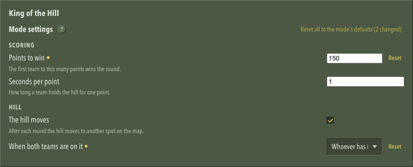
5v5 matches
Match mode runs warmup, /ready, a knife round for sides, and pauses, with a match panel on Play. Commands: 5v5 matches.
Basics
Maps
Browse
The Maps page shows every map you have, with pictures, search, map types, favorites and hidden maps. Open one to start a game on it or send it to your servers.
Downloaded maps work in both games. Condition Zero's own _cz maps only load in Condition Zero, so 1.6 leaves them out of lists, rotations and votes; Show lists them anyway.
Get new maps
- Get maps downloads from GameBanana, with what each map needs.
- Add a map file takes a
.bspor an archive (zip, rar or 7z). - Copy maps from your game, on a server, copies maps you already have.
Bots on new maps
Bots need two files per map:
- Navigation (
.nav): where they can walk, jump, drop and climb. - Map knowledge (
.lsv): sightlines, cover, angles to watch and which walls bullets go through.
Maps that come ready
Maps Loner-Strike installs and the stock 1.6 maps (except de_survivor) get both files by themselves, checked every few hours; Condition Zero's come with Valve's nav. Only the exact map version gets them, files bots learned are replaced, and hand-made navs (with place names) are kept.
Any other map
A map you add is learned the first time it's played: a Learn this map banner shows on the Bots page and the map timer waits.
- Navigation: a few minutes, or 15 or more for a big map on a slow computer. The game may seem to pause.
- Map knowledge: in the background during the first minute or two.
- Do it ahead of time. Teach bots maps on the Maps page learns several at once, and can Re-learn maps bots already know if they play one badly.
What bots know about your maps is shared with your servers.
When a download fails
- GameBanana is busy: try again in a minute.
- No map found in that download: it isn't a map, or it's for another game.
- No longer on GameBanana: the author removed it.
- Already installed: remove the old one first to install another version.
Basics
Mods, sounds and more
Mods
A game mode changes how the whole game plays; you switch between them. An add-on works on top of any mode and is switched on in Add-ons, like the grappling hook (bind it: bind v +hook).
- Install and Remove each one. Removing puts back what it replaced.
- Reinstall puts a mod's files in fresh. Didn't build needs Try again.
- Repair puts Loner-Strike's basics back. Settings and mods stay.
Your own plugins
In Mods, Your own plugins › Add a plugin takes an AMX Mod X plugin; a .sma is compiled for you.
Skins and models
Skins & models lists the weapon skins, player models, sprays, effects, HUD and menus you installed, each with Remove (which puts the game's own back). Only you see them. Servers have their own Skins & models tab.
Get more
GameBanana's 1.6 maps, skins, models and sounds, with each page's terms shown first (Credits). Add from a file takes one you already have.
Sounds
- Round-end music. Add tracks for your own.
- Quake sounds (first blood, godlike and the rest), with two announcers. Off on a new setup: turn them on here or in Add-ons.
- Sound packs: other sets of game sounds.
- Your sounds from GameBanana, with Remove.
Sound changes load on the next map. The app also has a radio with eleven stations.
Game modes
Last Stand
Co-op against waves of creatures: everyone plays Counter-Terrorist and holds a base against zombies, runners, brutes, spitters and bosses.
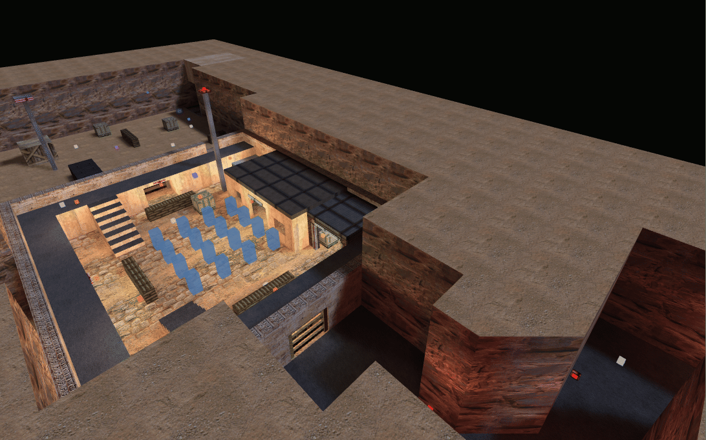
Start it
- On Play, under Game mode, pick Last Stand.
- Pick a map from Maps for Last Stand: ls_outpost, de_dust2, de_inferno, de_nuke, de_aztec or cs_office.
- Press Play Last Stand on the map. Maps starting with
ls_pick the mode by themselves.
How a stand goes
- About 45 seconds to get ready, then the waves.
- Between waves (20 seconds): money, a supply drop, and the dead come back.
- A boss every few waves. Endless by default (your best wave is kept); pick 5, 10 or 15 waves to play for a win.
- You lose when nobody's standing, or the creatures overrun the base.
Holding the base
- Barricades: hold E (use) on a gate's boards to repair them.
- Reviving: hold use on a downed teammate. Getting someone up pays $150.
- Buying: the buy menu works during waves, in buy zones. In the armory, B for weapons, or E at the counter (or
/shop) for repair kits, armor, grenades, ammo and medkits, pricier each wave. - Grenades: carry up to 3 HE, 2 flashbangs and 1 smoke (hosts change it with
lst_he_carry,lst_flash_carryandlst_smoke_carry).
Upgrades
- Perks (up to 4): Tough (+50% max health), Quick hands (faster reloads and swaps), Double tap (+25% damage), Quick revive (revive others in 2 seconds; alone, get back up once) and Light feet (+10% speed). $1500 for the first, $1000 more for each one after. Look at a perk machine and press E; on maps without machines, the armory sells them. Going down loses them.
- Upgrade bench (or the armory): the gun in your hands to Mk II ($3000, +40% damage), then Mk III ($6000, +90%, from wave 12).
- Mystery box ($950): a random weapon. Look at it and press E, then E again within 2 seconds to buy. On maps without one, it's next to the armory; there, E on the shopkeeper always opens the shop.
- Sentry turret ($2500 at the armory): press E where it should stand. It guards that spot for 150 seconds.
- Traps: on maps that have them, pay at the switch to turn a gate's trap on for a while.
- Power-ups: now and then a creature drops one, for the whole team. Walk over it within 25 seconds: Full resupply, Double pay (30 seconds), One-hit kills (30 seconds) or Airstrike.
Bots buy perks, upgrades and turrets too, once they have a rifle.
Knocked down
In a wave, a hit that would kill you knocks you down instead (with Revive time on). You lie on the ground with your pistol, a red pulse and a bar that counts down. Creatures leave you alone. A teammate holding E on you gets you up; when the bar runs out, you're out until the next break.
ls_outpost
Best for 4 to 16 players, and playable up to 32. A walled desert outpost at night with three barricaded gates (west, east, south) you can shoot through, a firing step creatures can't reach, the keep in the north as a last stand, and the armory shop. Supply drops land outside the west wall: take the ladder. Creatures can't climb. Players download nothing.
Settings
F3 (or say /ls) in the game:
| Setting | Choices |
|---|---|
| Waves | 5, 10, 15 or Endless (the default) |
| Wave difficulty | Easy, Normal, Hard or Nightmare (with shared lives: 3, 5 or 10) |
| Revive time | Off, 15, 30 or 60 seconds |
| Base overrun after | 10, 15 or 25 seconds of creatures inside, or Never |
| Bots' last chance | When every person is down, how long the bots get to save it, or they carry on alone |
| Shopkeeper | Barney, G-Man or nobody at the armory (from the next map) |
| Buy anywhere | Off, or between waves |
| Enemies | Creatures, or knife-only zombie bots (from the next map) |
Bots in Last Stand
Against creatures, every bot defends the gates, buys and repairs barricades. Against zombie bots, four defend and the rest are zombies. Make your own creatures and waves in Creature Studio.
Wave creatures hunt the defenders and never run away when hurt. Both can be changed for the whole mode or one wave (Creature Studio's Waves tab, or Game Mode Studio's Round Table On).
Game modes
Battle Royale
Solo or in squads: start with a knife, loot, and fight while the safe zone closes. Last one or last squad standing wins.

Start it
- On Play, under Game mode, pick Battle Royale.
- Pick br_valley, de_aztec, cs_italy, de_dust2, de_inferno or de_train. Maps starting with
br_pick the mode by themselves. - Bots fill the server. A game only starts once a person has joined.
How a game goes
- Drop in: fall slowly through a thick haze (a short view, so nobody spots everyone from the sky) and steer with WASD; landing doesn't hurt.
- Loot-up time: the start kit, and a few seconds when nothing can hurt anyone.
- No buying: everything comes from crates, floor weapons and supply drops.
- The zone closes in stages; the round clock counts down to each, and a horn sounds when it starts closing. Its edge is a storm wall, a purple storm fog hangs outside it, and it hurts more each stage.
- Supply drops bring the best loot.
- The end: the winner shows big on everyone's screen, and you see your place ("You placed #3 of 24 - 5 kills").
Finding the zone
- The compass under the top line shows where you face; Z marks the safe zone's middle, and << or >> at an end means it's behind you that way. Outside the zone it turns red: OUTSIDE THE ZONE: go NE.
- The zone line says where to go: Safe zone: 120 m NE (outside), Safe: inside the next zone too or Next zone: 80 m W (while the next circle is coming), Zone edge: 15 m (center N) near the edge, or In the zone.
- When you're out, you watch a player (Space for the next) and still see the zone round them.
Loot and healing
- Loot boxes: you can walk through them, so they never block a door. Hold E on one to open it. A box always gives you something you can carry, and says what you found.
- Healing: bandages, medkits and energy drinks. Press F (or
say /heal) to use one. - Armor comes in levels 1 to 3, for vests and helmets.
- Loot glows by how good it is: white (Common), green (Uncommon), blue (Rare), purple (Epic), gold (Legendary).
- The gear panel on the right lists your guns with their rarity tag ([C], [U], [R], [E], [L]) and ammo, your armor and your heals. It's on by default:
say /gearhides or shows it,say /gearlistopens the full list. - Ammo is scarce: pick up ammo for the guns you carry.
- Death crates: a player who's out leaves a crate; press E to take or swap what's in it.
- The HUD shows who's alive, your kills, the zone and the next one (also on the radar) and a kill feed. When you're out, you can watch who got you.
Squads
- Before the game,
say /squadmakes a squad, invites players, or shows its 4-letter code; friends join withsay /squad CODE. Players on the same network are grouped. Everyone else is put in a squad when the game starts. - Duos and Squads are also their own modes in mode votes.
- In Duos and Squads, a hit that would kill you knocks you down. Only your squad mates can get you up (hold E); other squads can finish you off. A squad is out when all of it is down.
br_valley
A river valley about 180 meters a side, with a town, factory, farms, a bunker (the best loot), radio hill (the best crate) and more, crossed by bridges, fords and tunnels. Best with 16 to 28 players; bots fill the rest.
Settings
F3 (or say /br):
| Setting | Choices |
|---|---|
| Squads | Solo, Duos or Squads of 4. Squad mates can't hurt each other. |
| Start with | Knife, or knife and a pistol |
| Loot-up time | 10, 20 or 40 seconds |
| Zone starts after | 20, 40 or 90 seconds |
Times scale with the player count, so small games are quick.
Bots in Battle Royale
Bots play by their playstyle: rushers and knifers hunt, roamers loot, campers, AWPers and lurkers wait. During loot-up they loot instead of fighting.
The bots
Bot styles
Who's in the lobby, picked on the Bots page.
| Style | What it's like |
|---|---|
| Pub server | The default: a few sharp players, most average, some bad |
| Newbie lobby | Slow to react, spray and miss |
| Mixed lobby | Every level, new to very good |
| LAN party | Every level, lots of banter, play together |
| Matchmaking | Solid players who work as a team |
| Veterans | Quick, accurate, short bursts |
| Old-timers | Good aim, slow, camp a lot, rarely talk |
| Locked In | Very good and focused; bunnyhop between fights |
| Hackers | Suspiciously good; notice you from behind |
| Gods | Everything maxed: nearly all headshots |
| Original | The game's stock bots, unchanged |
Skill, style and personality
- Bot style picks the kind of lobby (the table above).
- Difficulty picks how strong it is: Easy brings that style's weaker players, Expert its strongest. A Pub server on Expert is a strong pub.
- Personality sets how much each bot's character shows: Plain plays to the style, Normal lets each bot's habits lead, Exaggerated shows their quirks in full.
Each bot also has its own skill (reactions, aim, reading a fight, memory, decisions) and a playstyle:
| Playstyle | How they play |
|---|---|
| Rusher | Pushes first, goes back in |
| Roamer | Wanders looking for fights |
| Lurker | Goes round alone, catches you from behind |
| Careful | Checks every angle and holds |
| Camper | Picks a spot and stays |
| AWPer | Holds long angles with the AWP |
| Knifer | Loves the knife |
| Nader | Throws lots of grenades |
| Ninja | Sneaks to the bomb when nobody's looking |
| Objective | Bomb or hostages first |
| Odd guns | Buys what nobody else does |
Every bot is someone
Bots tilt, panic when flashed and back off when outnumbered. About 1,600 regulars return with the same names, some in clans, and remember you (Bot people). They play as a team in 5v5 matches, Base Builder, and Classic with Matchmaking; elsewhere, like individuals on a pub.
The bots
How the bots work
Each bot sees, hears, aims and decides like a person in its place would, at its own skill and in its own style. Nothing is scripted per map.
The ideas behind them
Map study ahead of time, like Killzone and Quake III (sightlines, cover, angles, wallbang spots); the Unreal Tournament 2004 BotPrize goal of bots you can't tell from people; and F.E.A.R.-style decisions they call out in chat and voice. On top: each bot knows the map only as well as its skill, wallbangs follow the game's real rules, and you can give orders by typing or talking.
They only know what you would
No wallhack. A bot knows where you are only if it saw or heard you, saw the radar or kill feed, or a teammate called you out, and it forgets over time. Sounds give only a rough direction.
How they see
- They see your body; better bots also catch a gun barrel or shoulder past cover.
- Someone still, far off or at the edge of view takes longer to notice.
- They turn from flashes they see coming. Smoke blocks their view.
How they aim
Like a hand on a mouse: a short delay, a flick that lands a touch off, then a correction. Better players react sooner and land closer.
How they fight
- Each stops to shoot its own way: counter-strafe, walk, crouch, or run and gun.
- They spread out, take cover, reload out of sight and pistol up close.
- Better ones wallbang someone they know is there.
How they decide
After backing off, a bot remembers where the enemy was, then holds, takes another angle, goes back in with a teammate, goes round or falls back, weighing numbers, guns, health, ammo, the bomb and the clock. Newer players go more on nerves.
Playing as a team
Ts gather and take a site together; CTs hold, rotate and retake. They trade, call out what they see and follow your team chat and voice commands.
Who they are
Skill, playstyle and mood shape every choice, and the same bot plays the same way each time.
Every mode
Deathmatch and Gun Game: they play for themselves. Team modes: they play the objective, or save their gun in a lost round.
The bots
Bot settings
The Bots page, before or during a game. Reset bot and fun settings, at the bottom, restores the defaults and keeps the bot count.
How many
The Bots slider sets how many (each takes a player slot), with Add a Terrorist, Add a Counter-Terrorist, Kill all and Kick all beside it. Bot count mode keeps a fixed number, fills the server, or adds a number per human; if the count keeps changing, that's why.
Skill and style
| Setting | What it does |
|---|---|
| Difficulty | Easy, Normal, Hard (default) or Expert (how it works). Changing it re-adds the bots |
| Bot style | Who's in the lobby |
| Auto difficulty | Adjusts to how you're doing |
| Personality | Plain to Exaggerated |
| Lobby mood | Friendly, Normal or Toxic |
Chat
| Setting | What it does |
|---|---|
| Bot chat | Off, Now and then, Normal (default) or Chatty. Off means they don't listen either |
| Bot chatter | Radio voice lines ("Enemy spotted") |
| Bots answer you | They answer and follow chat (what they understand) |
| Bots can be rude | Off by default |
| Dead bots' chat | Seen by everyone, or only the dead |
| Bots stop to type | They stand still a moment to type |
| Bot names | Regulars and clan tags, or the game's own |
| Players come & go | Bots leave and new ones join |
Bots type with US spelling; bots from the UK use British spelling ("rubbish round that, come on lads").
The rest
Further down: how human they play, their quirks, and server life, each with a note in the app.
The bots
Talking to the bots
Type in team chat and they answer, or do what you ask.
How they listen
- Wording close to the examples works. Start with a bot's name or nickname to ask just that one.
- Each decides by personality: a lurker may ignore "rush b". A bot only says yes when it does it.
- They also react to praise, trash talk and "gg".
What you can say
| For | Say |
|---|---|
| Moving | go b, rush a, split a, everyone mid, go b slow, fake b, fall back, watch flank, follow me, trade me, come here, wait here, nvm |
| Buying | eco, force, full buy, someone buy me an awp, drop me an ak, give me the bomb |
| Grenades | flash for me, flash long, smoke mid, nade them |
| Callouts | two long, awp mid, they're all b, bomb b, one short he's low |
| The bomb | plant b, plant here, go defuse, where's the bomb |
| Questions | money?, hp?, what gun?, how many left?, where'd they go, where are you?, who killed me, who has awp?, are they eco? |
| Just for fun | jump, crouch spam, spray that wall |
The Bots page lists all of this under What you can tell the bots.
When they don't answer
- Check Bots answer you is on, and type orders in team chat.
- With Bot chat Off they don't listen at all. Set low, they follow orders but say less.
- Lines starting with
/or!are commands, so bots ignore them. - Lots of lines in a few seconds make them stop listening for a bit.
- A dead bot can't go anywhere, though it may answer.
The bots
Voice commands
On dedicated servers, bots understand voice chat like team chat: hold your voice key and say "rush b" or "Derek, flash for me".
Set it up
- Open the server's Bot voice commands tab. On this computer, click Install first: about 500 MB, once for every server here.
- Turn on Bots understand voice chat. On a Linux server this takes a few minutes.
- Join and talk on your team's voice chat.
Privacy
Speech becomes text on the server's machine; no audio is kept or sent. Heard lines are logged under What it heard. Only teammates reach the bots; muted players and filtered words are left out.
Remove it
On this computer, Remove in the same tab turns voice off on every server here and deletes the models. On Linux, turn the switch off.
When it doesn't work
- The tab should say On, and listening, and What it heard shows each line it understood.
- Nothing heard: check voice chat works for other players and
sv_voiceenableis1. - "Voice stopped by itself": turn it off and on. Its log under What it heard may say why.
- "Port … on this computer is in use": close the program using it, or restart the computer.
- "can't use sudo without a password" (Linux): connect as
root, or give the user passwordless sudo. - Heard wrong? Speak a little slower and start with the order: "rush b", "flash long".
Create
The Tools
Everything for making things, under Tools in the app's sidebar. They're marked Beta while they settle in.
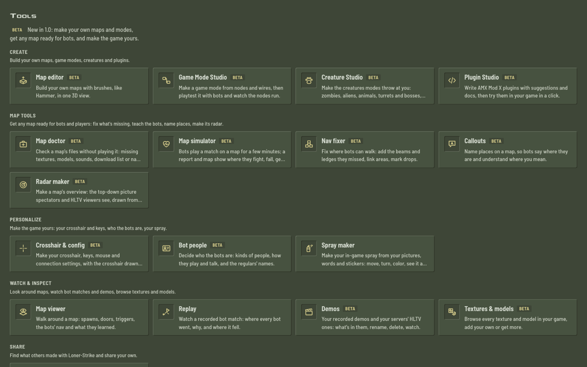
What's in it
| Group | Tools |
|---|---|
| Create | Map editor, Game Mode Studio, Creature Studio, Plugin Studio |
| Map tools | Map doctor, Map simulator, Nav fixer, Callouts, Radar maker |
| Personalize | Crosshair & config, Bot people, Spray maker |
| Watch & inspect | Map viewer, Replay, Demos, Textures & models |
| Share | Community |
Getting around
- Click a part of the top bar (Tools › Nav fixer › de_dust2), or Back, to go back.
- ? shows the page's keys; / jumps to its search box.
- Focus (Ctrl Shift Enter, Cmd on a Mac) hides everything but the tool.
- A tool opens on the map you last used it on.
Your files are backed up
Tools back up game files before changing them; most have Put back the previous file in More. While they're Beta, keep your own copy of work you care about, and tell us on Discord when something's off.
Create
Map editor
Build maps with brushes and entities, like Hammer, in a 3D view. The map is checked as you go.
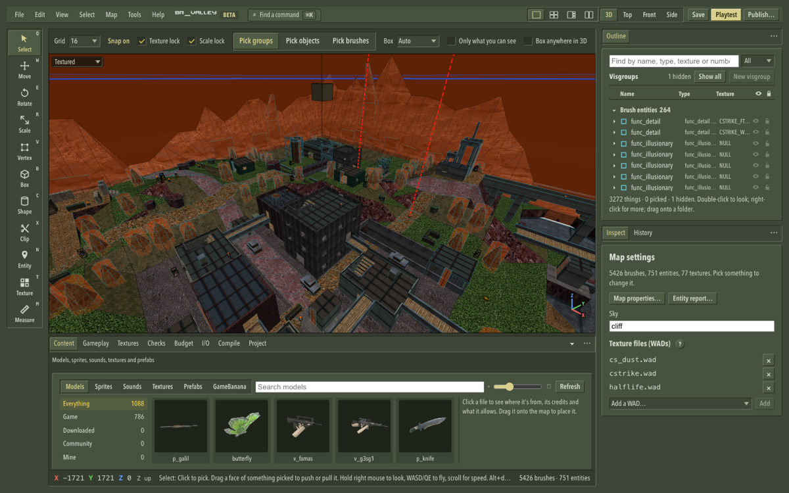
Start a map
In Tools › Map editor:
- New map: an open-sky room with two spawns per team.
- Open a project (
.lsmap), or pick from Recent. - Import a .map (TrenchBroom, or any GoldSrc editor) or Import from Hammer / J.A.C.K. (Importing).
Work is autosaved every 3 minutes, and each save keeps the one before. After a crash, the start screen offers Recover it.
Moving around
Pick a preset when asked (How should the 3D view move?), or later in View.
| Preset | How it moves |
|---|---|
| Unreal | Hold right mouse to look; with it held, W A S D fly, Q/E down/up, Shift faster, scroll sets speed. Alt-drag orbits, middle-drag pans. |
| Blender | Left-drag orbits, right-drag pans, scroll zooms. F flies with WASD; Esc stops. |
| Hammer | Z toggles mouse-look (WASD moves). Left-drag on empty space looks, right-drag moves forward and back. |
In every preset, F frames what's picked, Ctrl 1 to 9 saves a camera spot and 1 to 9 jumps back. ? lists every key.
Views and panels
- The editor bar: the menus, Find a command (Ctrl K), Save, Playtest and Publish….
- Single, Quad, 1+3 and Two (Alt 1 to 4) set the views. Quad is 3D, Top, Front and Side, like Hammer.
- Panels: Outline and Inspect on the right; the Content Browser, Gameplay, Textures, Checks, Compile and Project below. Drag tabs to move them. View has layouts and Reset the panel layout.
- Help › Change keys… has Hammer's and TrenchBroom's keys.
- New to mapping? Help › First map tour walks you through a first room, light, spawns and playtest.
- View › Show frame time (Ctrl Alt Shift F) shows frames a second and slow frames, for judging big maps.

Building
| Tool | Key | What it does |
|---|---|---|
| Select | Q | Click to pick; drag a picked face to push or pull it |
| Move, Rotate, Scale | W E R | Drag the handles |
| Vertex | V | Drag corners, edges or faces (brushes stay convex) |
| Box | B | Drag on a floor or brush to draw a box |
| Shape | C | Cylinder, wedge, spike, sphere or arch |
| Clip | X | Click two points; Tab picks the side, Enter cuts |
| Entity | N | Click a surface to place a spawn, light, weapon or anything |
| Texture | T | Slide, turn or stretch face textures; Alt-click picks one up |
| Measure | M | Drag between two points |
- Snapping: 16-unit grid; [ ] change it, Alt ignores it.
- Edit: Hollow (Ctrl H), Carve, Merge, Duplicate, Paste special… (a row, ring or spiral), Group, and Tie to entity for a door or func_wall.
- Select: Select same texture, Hide (H), Hide everything else, Lock. Visgroups at the top of the Outline show and hide named sets (New visgroup).
- Copy and paste work across maps and editors (as .map text).
Textures
The Textures panel shows the map's WADs (add more in Map properties). Click to choose; double-click or Shift T paints what's picked. Texture lock keeps textures in place when brushes move.
With faces picked, Inspect shows the face sheet: shift, scale and turn, Fit and Justify, Align to the world or to the face (good for slopes), Pick up a face's texture and Recent textures. With the Texture tool in the 3D view, right-click a face to paint the current texture on it, Alt-right-click to paint it and carry the picked face's alignment round the corner (like Hammer), and Alt-click to pick a texture up.
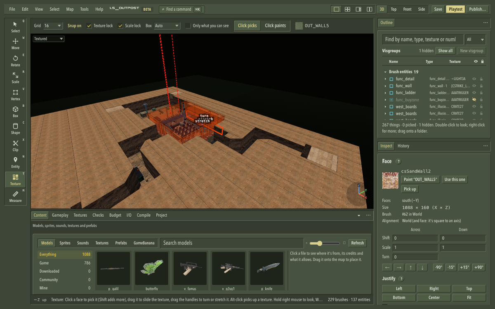
Entities
Inspect shows a form for the picked entity, with help on every key; pick several to change them together. target → targetname links are drawn in 3D. A model, sprite or sound key has Choose…, ↗ (show it in the Content Browser) and Use selected. For a mod's own entities, add its FGD in Map properties › Entity definitions.
The I/O panel (What triggers what) lists every link (targets, multi_managers, masters and kill targets) and draws them as arrows. Show All, only Broken ones (a target no entity is named), or the Picked chain; the search box finds a name or a class. Click a row to pick it, double-click to look at it.
The game's own logic and moving parts are in the entity list too, each with help: random triggers (trigger_random), trigger_setorigin, the game_ rules (score, counters, team masters, player zones), env_global, momentary doors and wheels, trains on a path_track track, turrets (func_tank), health and armor chargers, and item and ammo pickups. Tracks, turret aim and what trigger_setorigin moves are drawn in the views, and the checks say when one can't work (a turret that never turns, an empty random target). game_end ends the map for everyone when set off.
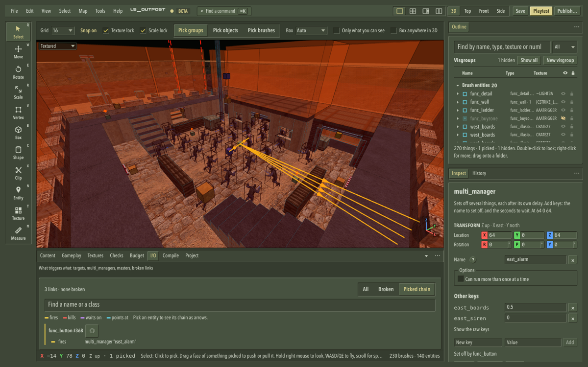
Content Browser
The map editor panel with Models, Sprites, Sounds, Textures, Prefabs and GameBanana. Open it from View › Content Browser (tab: Content) or as a drawer.
- Where from: Everything, Game, Downloaded (by GameBanana page), Community, Mine (next to your project), Other, Favorites, Recent.
- Play sounds with ▶, a double-click or Play on hover.
- Import… (or drop files from Finder or Explorer) copies your own
.mdl,.spr,.wavand.wadfiles into the project's folder (save the project first): they show under Mine and go with Playtest, Publish and remixes. Sounds can be.wav,.mp3,.oggor.flac: they become a WAV the game plays well (22 kHz mono by default; Sound options picks the rate, 8-bit, stereo for 2D-only sounds and trimming silence), and the summary says what changed. Files are checked; a name that's taken gets a new one, and the game's own names are refused. Right-click a file for Show in Finder (Explorer on Windows) or Export…, which says whose work it is first. - Mine shows your project folder's subfolders (+ New folder). Drag a file onto a folder, or right-click for Rename…, Move to… and Delete…: the map's references follow (a model's texture and sequence files too), and one Undo puts files and references back. Delete says first when the map still uses the file. The game's, downloaded and Community files stay as they are; right-click one for Copy to Mine to make your own version.
- Drag a tile onto the map: a model becomes a
cycler_sprite, a sprite anenv_sprite, a sound anambient_generic. - Details show the maker, uses, Look in 3D, and a sharing badge: OK to share, Ask the author, Not allowed or Game's own (Credits).
- Right-click: Find uses in the map, Add to favorites, Copy its path, Play.
- GameBanana finds things to download, terms first. They land under Downloaded.
The content drawer (Ctrl Space; Cmd Shift Space on a Mac; Ctrl Shift Space with TrenchBroom's keys; also View › Content drawer) slides it up over the bottom panels; Esc or a click elsewhere closes it.
Prefabs
The Prefabs tab has starters (doorway, stairs, crates, bombsite kit, buy zone and more) and your own. Drag one in, or Place and click; R turns it. Save what's picked… makes your own; Community prefabs… finds more.
The Gameplay panel has Components (Loner-Strike's mode pieces, like wave spawners and loot crates) and Mode kits: set Made for to a mode, and it lists the markers and pieces that mode needs, with Place for each. The checks say what's missing.
Checks as you go
Checks finds broken brushes, limits, missing textures, spawns, files or targets, and what a mode still needs. Click a problem to go to it; most have a fix, like Place a CT spawn or Add halflife.wad and cstrike.wad.
Leaks show when you compile: a red line runs from an entity out to the hole, and a bar says which brush the gap is next to. Go to leak flies along the line and picks that brush; Pick brushes at the hole, Hide line and Forget it are there too. Map › Load pointfile… loads a line (.lin or .pts) from another compile.
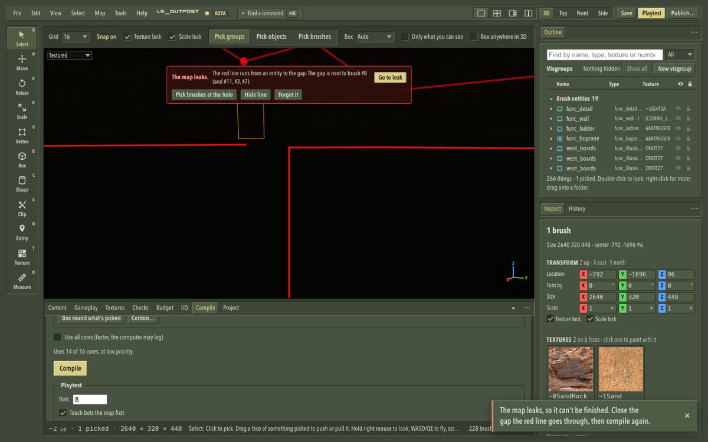
The game won't load a map with missing models or sprites. The Project panel lists every file the map uses, can Copy into the game or Copy next to the project, and Find missing files… searches a folder you pick.
Budget
Budget (in the panels, or View › Budget) shows how close the map is to the engine's limits: precached models and sounds (with the game's own share and a reserve for modes), brush entities, entities, edicts and textures as you build, and after a compile that map's own numbers (planes, clipnodes, faces, leaves, lighting). Green has room, yellow is over 75%, red over 90%. Click a bar for what uses the most, with the usual fix and Pick. Playtest and Publish ask first when a bar is red.
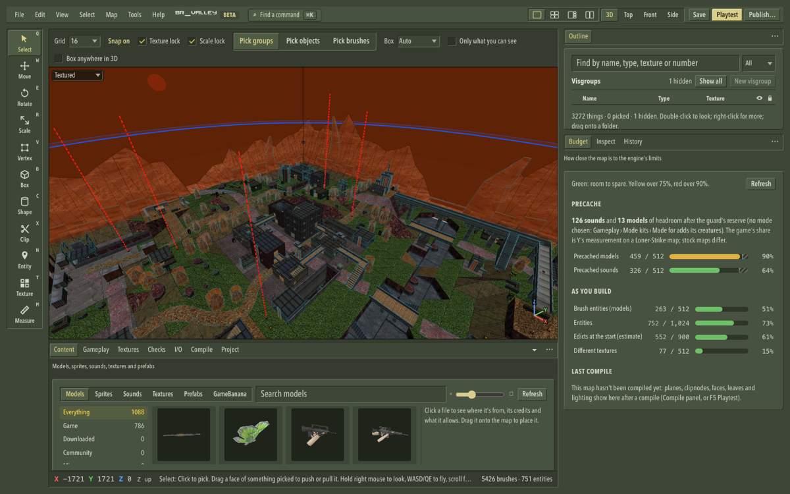
Saving and exporting
- Save (Ctrl S) keeps a project (
.lsmap) with groups, hidden things and the rest. - File › Export a .map… (Ctrl E) writes a Valve 220 .map with its texture list.
- Publish… (in the bar or Map) packages a compiled map for you to upload to GameBanana.
A map you installed from Community is never compiled over: its updates would replace your changes. Compile it under your own name (Save as <name>_edit), or Remix it to get its editable source, credited to the maker. When the original of your remix is updated, the project's files and the map in Maps say so, with a link to see what changed. Your remix never changes by itself.
Next: compile and playtest.
Create
Compile and playtest
Turn your map into a .bsp and play it with bots, from the Compile panel or with F5.
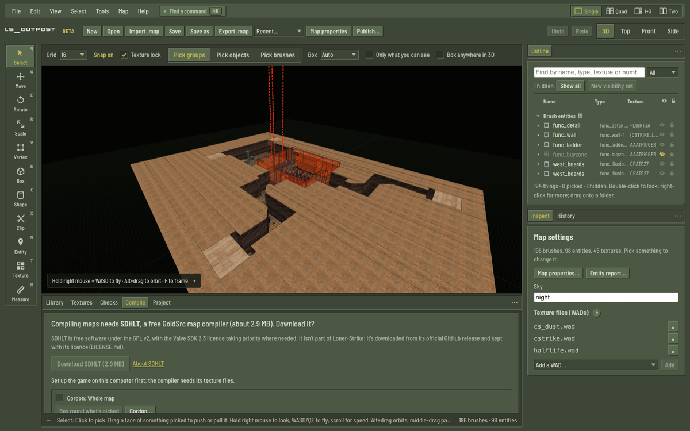
The compiler
Maps compile with SDHLT, a free compiler (about 3 MB). The first time, Download SDHLT fetches it from its official GitHub release; its license is in the panel. On a Mac it runs through CrossOver in your game's bottle.
Compile
- Give it a Map name: letters, numbers,
_and-, up to 31. - Pick the quality: Fast (no visibility pass, quick lighting, for trying things), Normal (for testing) or Final (full quality, slow on big maps).
- Press Compile and watch the steps.
Non-stock texture files are packed into the .bsp. Use all cores is faster but may make the computer lag.
After a Final compile, Teach bots and send to my servers puts the map in your game, teaches bots it, then copies the map and its bot files to every server you have. Bots build their map knowledge on each server the first time the map runs. A server that already has an older copy the app put there gets the new one; a server with someone else's map by that name keeps it. The summary says which servers got it and why any didn't.
When it finds a problem
Click a problem to pick the brush or entity it's about.
- The map leaks: Show the leak line draws a red line from an entity to the gap. Close it with a brush.
- Nothing inside: put a player spawn inside a sealed room.
- A missing texture or texture file: add the WAD in Map properties, or replace the texture.
- Too many faces or another limit: cover unseen faces with
NULL, or simplify.
Compiler output has the full log.
Compile part of a map
Cordon compiles only what's inside the boxes you draw, sealed with sky or black walls. Nearby lights come along, and a playtest starts you inside.
Playtest with bots
- Under Playtest, pick the Mode and how many Bots.
- Leave Teach bots the map first ticked (about a minute).
- Press Playtest. It compiles, puts the map in your game (backing up any map with the same name) and starts it with bots.
F5 or Map › Playtest does the same from anywhere. Stock maps can't be overwritten: use another name. A missing custom model or sprite blocks the playtest (Checks); missing sounds or sky only warn.
After a playtest
- Bots got stuck? Run the Map simulator, then fix spots in the Nav fixer.
- Name places with Callouts and make an overview with the Radar maker.
- Happy with it? Package it and upload it to GameBanana.
Create
Hammer, J.A.C.K. and TrenchBroom maps
Open maps from other editors. The original file is never changed: saving makes a new project.
What it opens
| File | From | How |
|---|---|---|
.rmf, .jmf | Valve Hammer Editor (3.x), J.A.C.K. | Import from Hammer / J.A.C.K. on the start screen, or File › Import a Hammer .rmf or J.A.C.K. .jmf… |
.map | Any GoldSrc editor, including TrenchBroom | Import a .map |
What comes over
Brushes, entities, groups, visgroups and paths. TrenchBroom's groups and layers come in as editor groups: a hidden or locked layer stays hidden or locked, a layer marked omit from export stays out of exports and compiles, and linked groups come in as separate copies. Export a .map… writes the groups and layers back, so the map opens in TrenchBroom as it was. Cameras, background pictures, the cordon and J.A.C.K.'s curved patches are left out, and the import says so, along with any missing models, sprites and sounds (Find missing files… in Project fetches them).
Texture files
Hammer and J.A.C.K. keep the WAD list outside the map, so the editor adds the WADs it finds beside the imported file, then in your game folders, and notes which. Still missing? Add them in Map properties, or put them beside the map or project.
Before you compile
Look the map over and open Checks first, and keep your original. If something came over wrong, send the file in a GitHub issue or on Discord.
Create
Game Mode Studio
Make a game mode from nodes, like Unreal's Blueprints: when something happens, check things and do things. The Studio turns the graph into a plugin, tests it on a hidden server with bots, and installs it.
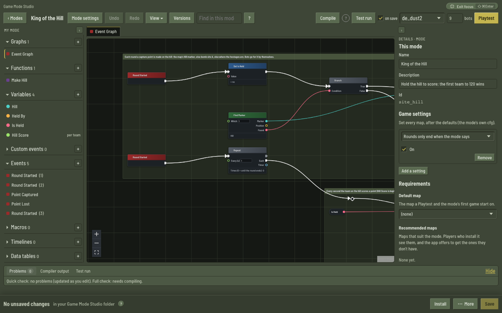
Start a mode
In Tools › Game Mode Studio, start from a template (Rifle Reward, Last Stand, Battle Royale), one of the five example modes, or Blank mode. Name it and it's saved; Your modes lists them.
New to the Studio? The first time you open it, it offers a one-minute tour on the Infection example: the canvas, adding nodes, My mode, Details, the three checks, Playtest and Install. Not now or Don't show again skip it, and the ? menu next to Find has Take the Studio tour any time.
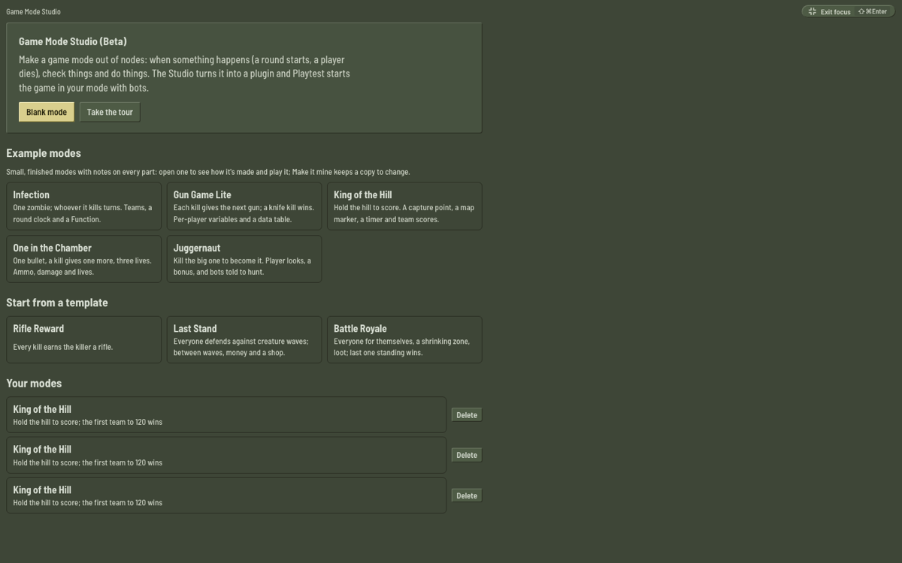
Make your first mode
Five minutes, start to finish: every kill gives the killer 300 money and a chat line.
- Start a Blank mode and call it Kill Bonus.
- Right-click the canvas (or press Space), type killed and pick Player Killed.
- Drag from its Attacker pin and let go on empty space: the list shows only nodes that take a player. Pick Give Money and set it to 300. Wire Player Killed's white flow pin into it.
- From Give Money's flow pin, add Chat Message with the text Bounty paid to, and wire Attacker into its Value.
- The Problems tab at the bottom should say no problems. Press Compile: the icon beside it turns green.
- Press Playtest. The game starts in your mode with bots, and the nodes light up as kills happen.
- Happy with it? Install adds it to Play and the in-game F3 menu.
A kill by the world (a fall) has no attacker, so nothing is paid: Give Money says so in the debugger. Add an Is Valid? before it to skip those.
The editor
- My mode (left): graphs, Timelines, custom events, data tables, events, functions, macros, variables, structs, enums, map markers, snippets and My library. Drag a variable onto the graph to get or set it.
- The graph (middle): the Event Graph and any other event graphs, plus a tab per open function, macro or Timeline.
- Details (right): help and settings for the picked node, or the mode's name, description and game settings.
- Results (bottom): Problems (click one to jump to the node), Compiler output and Test run.
Right-click anything for Rename…, Duplicate, Find uses, Save to my library… and Delete….
Nodes and wires
- Right-click or Space opens the node list. It's in folders by kind (Players › Actions, Game › Settings…); typing searches titles, help and other words (gravity finds sv_gravity). Favorites (the star) and Recently used sit at the top. Arrow keys open folders and Enter places a node.
- Drag from a pin to empty space to see only nodes that fit (Context Sensitive; untick it to see everything).
- White pentagon pins carry the flow; round pins carry values, colored by type. Square pins hold files, a letter on an entity pin says what kind it is (C a creature, N an NPC), and # marks a whole number (types).
- C adds a comment box, double-clicking a wire adds a reroute point, and Tidy up lays nodes out.
Over 650 nodes, for example:
| Kind | For example |
|---|---|
| Events | Round Started, Player Killed (weapon, headshot, distance, team kill), Player Hurt (hit where, weapon), Chat Command, Weapon Fired |
| Flow | Branch, Sequence, Do Once, For Each Player, Switch, loops |
| Players | Give Weapon, Set Health, Teleport, Respawn, Set Ammo, God Mode, Screen Fade |
| Game and World | Round Number, Team Score, Change Map; Gravity, Round Time, Friendly Fire and the other settings, to read or set |
| Entities and effects | Find Entities, Spawn Prop, Get Entity Transform, Explosion, Beam, Play Sound At, Objective Marker, Remove Marker |
| Timers and the round | Delay, Repeat, Countdown, Timeline, Set Round Clock, End Round |
| Damage | Block Damage, Scale Damage (after Player About To Be Hurt) |
| Messages | Show Message, Show HUD Text, Chat Message, Menu, Play Sound, Status Icon, Kill Feed Line |
| Bots and creatures | Bots: Goal, Bots: Friends, Bot Follow; Spawn Creature, Creature Go To (more) |
| Components | Zones, crates, waves, supply drops, shops, perks, capture points |
| Data tables | Get Row, Get Cell, For Each Row, Find Rows |
| Saved | Numbers kept between maps and restarts |
| Types | Color, Make Color, Blend Colors; Model, Sprite, Sound; As Player, As Creature, As NPC and the other casts |
Icons, markers and the kill feed
- Status Icon: shows, flashes or hides one of the game's own HUD icons (the buy zone cart, C4, the defuser, the rescue zone and the like) for one player or everyone, in a color, until they die or leave. It can only use icons every player already has; it can't show your own pictures.
- Objective Marker: a sprite floating over something (a player, an NPC, an interactable, a component; it follows it) or at a spot, for everyone, a team or one player. Use one of the game's sprites or your own
.spr, which goes with the mode when you share it. Remove Marker takes it away; it also goes when what it follows is gone. For your own pictures, use this instead of Status Icon. - Kill Feed Line: a line in the top-right kill feed (killer, weapon icon, victim, headshot). It's only the line: nobody dies and nothing is counted.
Model, sprite and sound inputs have Choose…: the game's files, Import… (or drop a file on the input), and files from your map projects, which are copied into your game when picked. Sprite inputs also have Make sprite…, which makes one from pictures and picks it. The picker previews it: a model in 3D, a sprite's first frame, a sound's play button. Files you add go into your game, so modes can use them; sharing packages them for you.
Files are values too: a Model, Sprite or Sound variable, table column or node. They're always picked, never typed as text, because the game loads every file a mode can use with the map. A file that isn't on the server is skipped and logged.
Engine nodes
- Damage: Deal Damage hurts a player or anything that can be hurt (a breakable, an NPC, a creature) as if the Attacker did it, so kills, the kill feed and scores count. Pick the kind (burn, fall, blast…) and the hit zone (a head hit shows as a headshot).
- Entities: Get/Set Entity Property reads or changes render mode, effect, color, amount, skin, body, scale, gravity, movement, collision, health and animation speed on any entity, so props and NPCs can glow or fade too. A player's movement and collision stay theirs (No Clip, Freeze). Play Animation plays a model's sequence; Attach To makes a prop or sprite follow a player or entity (or one of its model's attachment points) until Detach. Set Grenade Fuse changes when a thrown grenade goes off.
- Messages: Big HUD Text (bigger text anywhere on screen, in a color, faded, flickering or typed out), Colored Chat (a green tag, then a team color, green or yellow; color codes in names never get through), Play Radio (the game's radio lines and announcer, to a player, a team or everyone) and Show Info Window (the message-of-the-day window with your title and text, [br] for a new line and [b] for bold; plain text only, never a web page). Too many big texts or colored lines in one moment are skipped, so the server never floods players.
- Movement: Player Movement State (on ground, ducking, in water and how deep, on a ladder, speed), Push (along the aim, facing, a direction, away from a point or up: jump pads, dashes, knockback) and Jump Rules (block jumping or ducking, extra air jumps, auto bunny hop, each back to normal on death or at a new round if ticked).
- Events: Grenade Thrown and Grenade Exploded (who, the grenade, its kind and where), Weapon Switched (the new and old weapon), Entered/Left Map Zone, and On Map Entity Fired: any named entity of the map being triggered or used, with who set it off, so a map's buttons, relays and timers drive a mode without an ls_event.
- Game: Remove Map Objectives (buy zones, bomb sites, hostages, rescue, VIP and escape zones; the game notices from the next round), Map Type (bomb, hostage, VIP, escape or other), In Map Zone, and Voice Rules (everyone, teammates, dead with dead, or within a distance) with a per-player Voice Override. Mute Voice still mutes.
- Rounds, votes and admins: Round End Rules keeps rounds going when a team is wiped out, when time runs out, or both (End Round still ends one; a new mode starts as usual). Start Vote asks a question with 2 to 8 answers and runs the winner's output, Tie or No votes; Vote Count reads the result. It never opens over the server's map or mode vote or another open menu. Has Admin Flag checks one flag from the admin list.
- Hostages and bots: Hostage Follow, Hostage Stop and Is Following make hostages escorts on any map. Add Bots and Remove Bots use the bot brain's own commands, never more than the free slots; the host's bot count comes back at the next map.
- NPCs: NPC Move To walks or runs an NPC to a point or an entity along the map's bot navigation (straight on a map without one), with Arrived and Failed outputs; NPC Follow Path goes through a list of points or a map's path_track chain (once or looping) with At point and Finished; NPC Stop stops it. Afterwards the NPC goes back to what it did, or stays there.
Node help
The ? menu next to Find › Node help, or F1 with a node picked, opens a panel beside the graph that explains every node: what it does, each pin and setting, related nodes, and a note when it's costly or needs care. Most nodes have an example: Add the example drops it into your graph. Search it like the node list.
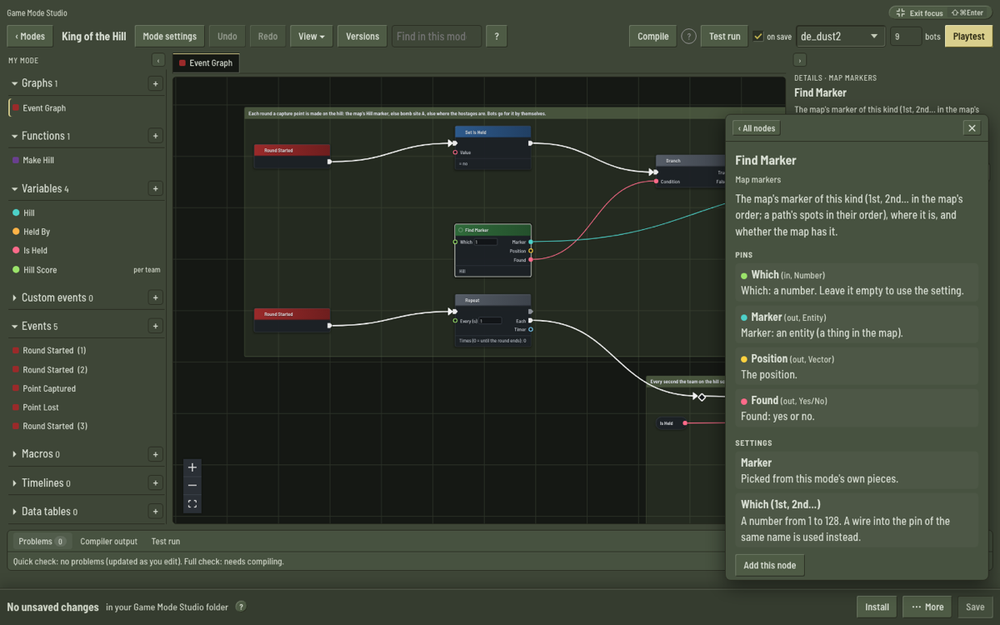
Variables, functions and macros
- Variables: number, yes/no, text, vector, color, transform, player, team, a weapon, a file and more, per mode, player or team, kept for the map or reset each round. Lists and maps too.
- Functions: reusable graphs with inputs, outputs and locals. They run straight through, so waiting nodes like Delay go in a macro.
- Macros: copied in where used, with several flows in and out.
- Structs group values (a loadout); enums are named choices (scout, tank, medic). A struct's field holds one value: a number, yes/no, text, a vector, a color, a file (model, sprite, sound or decal), a player, an entity or an entity handle (NPC, creature, projectile...), a team, a timer, a sound loop or an enum. For a list, make an Array of the struct.
- Collapse to Function or Collapse to Macro tidies picked nodes.
Deleting a variable, function or custom event that's in use asks what to do with the nodes that use it (it says how many and where, with Find uses): Replace with another of the same kind (wires stay), Remove it and its nodes (the flow is joined up round them), or Remove it, keep the nodes. Each is one Undo.
Types and casting
A wire only connects pins whose types fit. The ones worth knowing (the full guide):
- Color (red, green, blue, alpha), Transform (position, rotation, scale, velocity), Weapon, Hit Zone and Damage Kind, and the files: Model, Sprite, Sound, Decal.
- Nodes that make a thing give it typed: Spawn Creature gives a Creature, Spawn NPC an NPC, Loop Sound a Sound Loop. These go into any Entity pin as they are.
- From an Entity back to a kind takes a cast: As Player, As Creature, As NPC… each with Success and Failed. Drop an Entity wire on a Creature pin and the Studio offers Insert As Creature.
- An enum into Switch on Enum gives one output per value: Player Hurt's Hit zone → head.
Modes from 1.0 open as they are and make the same plugin. If an update ever removes a pin you had wired, the wire stays on a red Orphaned pin until you re-wire or delete it.
Event graphs and custom events
- Graphs in My mode adds more event graphs, to keep a big mode tidy (one for the shop, one for scoring). They're only for you: two of the same event, in different graphs, both run, in tab order.
- Custom events are your own events, with inputs you choose. Call Custom Event runs every Custom Event node for it, from anywhere; Set Timer by Event runs one later or again and again.
- A map can fire one too: tick The map can fire it, and in the map editor point a button or trigger at an ls_event entity with the event's name. Player is whoever set it off.
Timelines
A Timeline is values that change over time and events at set moments: a lifting platform, a pulsing glow, a 3-2-1 countdown. Add one under Timelines, add tracks (a number, a position, a color, or events), click to add keys and drag them. A Timeline node plays it: Update runs every tick with the tracks' values, Finished at the end, and each event track has its own pin. It can loop, reverse and jump to a time.
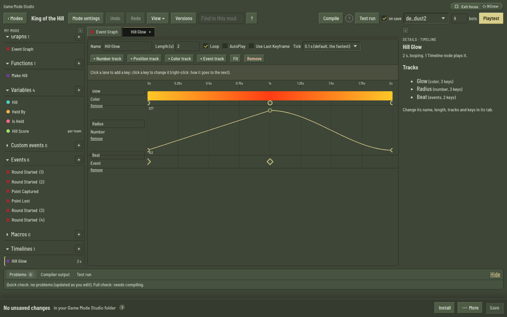
In a function with a Player input, each player gets their own copy. That's up to 32 copies, each ticking 20 times a second; the Quick check warns when that adds up. A Tick of 0.1 s still looks smooth.
Data tables
A data table is a grid of values to look up: a gun list, prices, waves. Under Data tables, add one and fill it in: each column has a type (number, text, yes/no, an enum, a weapon, an entity name, or a model, sprite or sound), and the key column names each row. Paste or import CSV… takes rows straight from a spreadsheet; Copy as CSV goes the other way.
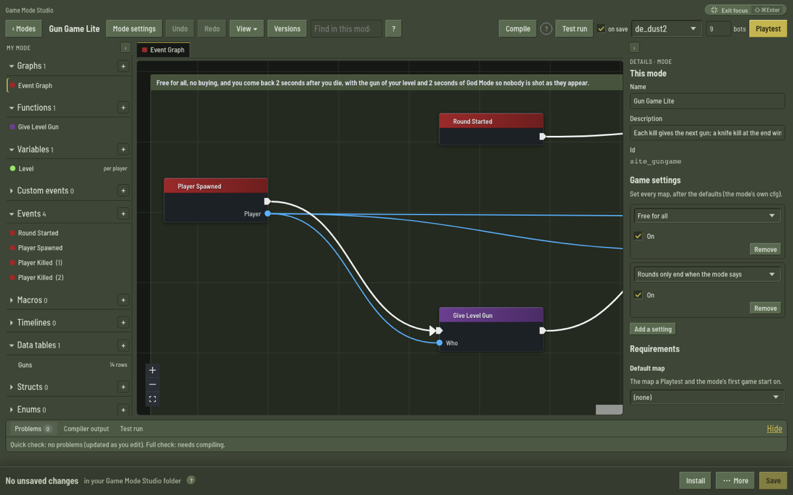
- Get Row: the row with this key, every cell as a pin. Get Cell: one cell by row number (from 0).
- For Each Row, Find Rows (where a column has a value), Row Count, Row Keys.
Tables are built into the plugin, so reading them costs almost nothing. A mode can have 16 tables of up to 16 columns and 256 rows. Gun Game Lite's gun list is a table: change the order there.
Snippets
Snippets has 14 ready-made pieces, like a wave system, shop menu, revive and shrinking zone. Click or drag one in; its variables join yours. Save the selection as a snippet makes your own.
My library
Save to my library… on a function, macro, struct or enum makes it usable in any mode; drag it in from My library. Modes using an older version offer Update from library in Details. Items and the whole library export and import as files. Library items can't go to Community yet.
Starter library
The Studio comes with ready-made functions and macros, listed in My library as built in and in the node search under Starter library. Adding one copies it into your mode, so change it however you like. Each one has a note over its graph saying what to wire into it, its settings (0 or empty uses the default it names) and what bots do with it. They use only the game's own sprites and sounds.
- Movement: Double Jump, Dash (with a cooldown; wire Player Pressed Button in), Jump Pad (a trigger volume that launches players), Teleporter Pair (with a cooldown so nobody bounces straight back).
- Abilities: Ability with Cooldown (a template for any ability, with Bot Wants Ability so bots use it in fights), Fireball (explodes where it hits), Proximity Mine (its owner can't set it off; bots keep away).
- Pickups: Health Pack and Weapon Pickup on trigger volumes, coming back after a delay. They're offered to bots as pickups.
- Player state: Spawn Protection (god mode and a glow, ended early by shooting), Lives Counter, and Burn, Slow and Freeze with timers.
- Rounds and scoring: Kill Streak Announcer, Countdown HUD (minutes:seconds in big HUD text), Capture Zone (bots are sent to take it), Leaderboard Display (Top Players of a saved score in an info window).
- Spectacle: Kill Cam (the victim sees the killer), Victory Camera, Hot Potato (bots chase the holder, and a bot holder runs).
- Story: Quest Step Tracker, which pairs with Run Dialog.
Events stay in your mode: wire Begin Overlap (with the volume's name), Player Killed, Player Hurt or Round Started into the premade, as its note says.
Map markers
Under Map markers, list the spots, areas or paths a map needs for your mode, how many, and their keys; the marker nodes read them. Installing the mode makes a mode kit from them for the map editor's Gameplay › Mode kits and checks (more). Map advice tells mappers the size and player count that suit it.
Bots and creatures
Your mode can tell Loner-Strike's bots how to play it, and steer the creatures:
- Bots: Goal gives bots something to do at an entity: defend or capture it, use it, loot it, or go and hold there, with a priority and for how long. Bots: Clear Goals takes them back.
- Bots: Friends (teams, a tag, a player) and Bots: Tag; Bots: Phase (a loot phase where nobody is an enemy, then the fight); Bots: Don't Buy; Bots: Prefer Layer; Bots: Offer (something here can be bought or used for a price); Bots: Fight Creatures.
- Bot Go To, Bot Hold, Bot Follow and Bot Free order one bot.
- Creatures: Spawn Creature (health, tier, pay), For Each Creature, Nearest Creature, Can See, Creature Go To, Attack, Hold, Flee To, Resume AI, Set Creature Health, Remove Creature, and the Creature Idle event (one that has stood still: send it to the gate).
Bots still fight on the way and keep their own judgment: a goal is a strong suggestion, not a script.
Server commands: what's allowed
Run Server Command and Run AMX Command are power tools for what no node does yet. So that a shared mode can't harm a server, they only run commands that change the game:
- Run Server Command: game rules (
mp_settings), gameplaysv_settings (gravity, air control…), bot settings and commands, Loner-Strike's gameplay commands,sayandhumans_join_team. - Run AMX Command: slap, slay, kick, the say commands,
amx_cvaron the settings above, and map changes to maps the server has. - Anything touching passwords, files, logs, plugins, rcon, configs or quitting is refused, and so is more than one command at a time (no
;), quotes and other tricks. The node's Ran pin says No and the debugger says why.
The same check runs twice: when you build the mode, and in the plugin as it runs (for commands put together from text). Modes that use these nodes, Kick, or Call Plugin Function say so on their Community page, in plain words, before anyone installs them.
Install and play
Install builds the plugin and adds the mode to Play and the F3 menu. More › Remove from the game takes it out, More › Show code shows the plugin, and Open in Plugin Studio carries on in code. To test as you build, use the checks and Playtest.
Share a mode
Package it from Tools › Community › Publish › A game mode and upload it to GameBanana (how). Only the graph is shared: each player's app builds the mode, so nothing that runs code travels. Your own models, sprites and sounds go with it wherever the mode names them (node settings, file variables, table cells). A mode that uses a power tool (server or AMX commands, kicking, calling other plugins) shows a badge for each, and players confirm before installing. Others can Remix in Game Mode Studio, which makes a new mode that credits yours.
Before you share: run a Test run, give it a clear description, and list the map markers it needs, so a mapper can make maps for it.
Create
Example modes
Five small, finished modes with a note on every part. Open one from the Studio's start screen to see how it's made, play it, or make it your own; they're also on Community.
| Mode | The rules | What it shows |
|---|---|---|
| Infection | One player turns zombie 15 seconds in. Whoever a zombie kills turns too; zombies come back. The humans win if anyone is left when the 3-minute clock runs out. | Teams, a function (Infect), the round clock, ending a round once |
| Gun Game Lite | Free for all. Each kill gives you the next of 14 guns; a knife kill after the last one wins. 2 seconds of God Mode on spawn. | Per-player variables, a data table, spawn protection |
| King of the Hill | Hold the hill (a capture point) to score a point a second; the first team to 120 wins. | Components, a map marker with fallbacks, a Repeat timer, team scores |
| One in the Chamber | A deagle with one bullet that always kills; a kill gives another. Three lives; last one standing wins. | Ammo, changing damage, lives |
| Juggernaut | One big, slow, tough player with a machine gun. Whoever kills them becomes it; 20 points win. | Player looks, a bonus, bots told to hunt |
Each one passes all three checks and was played with 12 bots before it shipped.
Create
Checking a mode
Three checks, from instant to real: the Quick check as you edit, Compile with the real compiler, and a Test run on a hidden server with bots.
Quick check
Runs as you edit. Problems lists what won't work (a pin that needs a wire, a node nothing runs, a setting that's out of range) and what will cost the server (a scan on every hit, a fast timer with messages in it). Click a problem to jump to its node. Errors stop a compile; warnings don't.
It also says when bots won't know about something they could use: an interactable with Bots may use off, or an NPC the mode talks through, with no Bots: Offer or Bots: Goal at it. Things the components tell bots about by themselves (capture points, extraction zones, checkpoints, loot, supply drops, perk machines, benches, mystery boxes, traps) aren't listed. The warning has a button that fixes it (turns Bots may use on, or adds a Bots: Offer after the NPC; Undo takes it back) and Don't warn for this one.
Compile
Compile (Ctrl+B or F7) runs the real compiler without installing anything or starting the game. The icon beside it: gray, not compiled since your last change; green, compiled; yellow, warnings; red, errors (click it for Problems). Compile on save does it in the background each time you save.
Test run
Test run plays the mode on a hidden server of its own, with 8 bots, for about two minutes: a stretch without the mode (to measure the server), then the mode, a round restart and a map change. Your game isn't touched, open or closed. It reports:
- Pass, Warn or Fail, and why.
- Errors while it ran, tied to their nodes, and a crash if there was one.
- How heavy the mode was against the server without it, and the busiest nodes.
- Nodes that never ran (fine for things the bots didn't do, like buying).
The log is under Copy the log. The toolbar says Tested ✓ until you change the mode.
Why won't it compile?
- The Quick check has errors. Fix those first: Problems lists them, red, with the node.
- Pick a variable, table, Timeline or custom event. A node that names one needs it set in Details.
- A pin needs a wire. Required pins (often Player) have nothing to fall back on.
- The flow loops back. Wires can't go round in a circle: use a loop node, a Repeat or a custom event.
- A red Orphaned pin. An update removed that pin: re-wire or delete the wire. View › Refresh nodes lists what an update left behind.
- A compiler line not tied to a node. That's our fault, not yours: More › Show code shows the line, and please report it.
It compiles, but nothing happens
- Run a Test run and read nodes that never ran: the event above them didn't happen, or a condition went the other way.
- Playtest and watch the nodes light up; put a breakpoint where it should run.
- Give Weapon and friends say in the debugger why they did nothing (dead, already has one, nobody there).
- A setting the game sets again each map (the bomb,
mp_give_player_c4) can't be changed from Game settings: take the bomb with Remove Weapon (C4) at Round Started instead.
Create
Playtest and debug a mode
Playtest
- Pick a map and the number of bots in the Studio's toolbar.
- Press Playtest (F5). It saves, compiles with the debugger and starts the game in your mode, showing each step, with Cancel. Fix anything under Results first.
- If the game is open, Switch the open game changes the map and keeps the bots.
The first start can take a minute. The panel says Playing on the map once connected.
Watch it run
- Nodes light up as they run and wires show the last flow. False conditions and errors are marked.
- Hover a pin for its last value. A playing Timeline shows its time, direction and each track's value.
- Details › Last time it ran: how often, the result and the inputs.
- What happened lists the last 40 things that ran.
Breakpoints
Click a node's dot, or F9, to pause the world when it runs. Live values shows the round, time left, who's alive, your variables and each player's health and weapon. Resume carries on. There's no stepping node by node.
Change values while it plays
In Live values, Change next to a variable (a number, yes/no, text or enum; for the whole mode, a player or a team) sets it in the running game at once, with no recompile: tune a speed, a price or a timer while you watch. What happened logs each change. Use as start value copies the value into your graph as the variable's start value, so the next build starts with it. Changes only reach a Playtest (the debugger's build), never an installed mode.
Good to know
- Menus need a person to answer: bots won't.
- Up to 2000 nodes and 64 variables per mode. How much a mode may do at once (effects, loops, things out) is under its Limits settings (Limits).
- Component and creature nodes need Loner-Strike's mode pieces on the server (your own game has them).
- The Playtest build records every node it runs, so don't judge the mode's speed by it: Test run measures the real build.
Create
Plugin Studio
Write AMX Mod X plugins with suggestions and docs as you type, and try them in your game in a click.
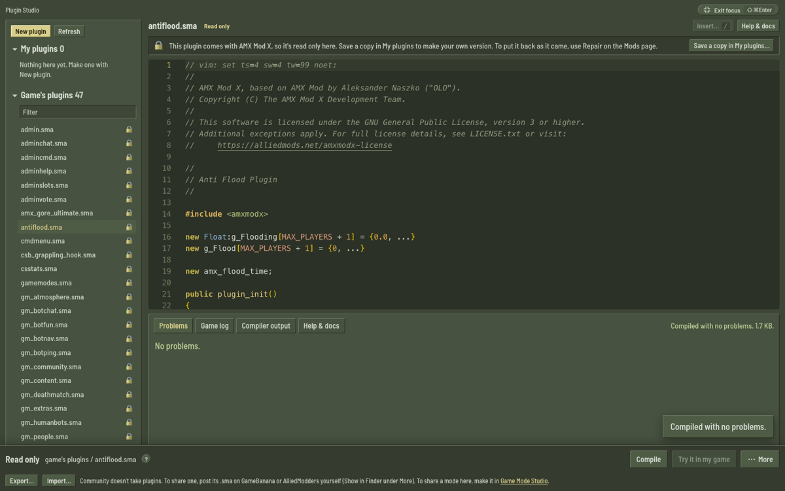
Community doesn't take plugins. To share one, post its .sma on GameBanana or AlliedModders yourself (Export… saves the .sma and its own .inc files where you pick; Import… brings .sma and .inc files into My plugins and never overwrites one). To share a mode here, make it in Game Mode Studio.
Your plugins and the game's
- My plugins are yours. New plugin starts from a template: empty, game mode, chat command, on player killed, items on spawn, HUD message, menu or timer.
- Game's plugins and Include files are read-only; Save a copy in My plugins… to change one.
- More › Restore a previous version… brings back an earlier save.
Writing
- Suggestions come from your game's include files.
- Hover a function for its docs; F12 (or Ctrl-click) goes to its definition.
- / at the start of a line, or Insert…, adds snippets.
- Help & docs searches every function, with Put it in my code.
Compile and try it
- Compile (Ctrl Enter). Errors are explained, marked on their lines and listed under Problems.
- Try it in my game compiles, installs it and restarts the map. Game log shows its messages.
- Take it out removes it.
This works on your own game, not servers. Plugins can't go to Community; Game Mode Studio modes can.
loner.inc
Loner-Strike's include file has short ways to do the usual things. #include <loner> just works in Plugin Studio.
| For | Natives |
|---|---|
| Modes | ls_register_mode, ls_mode_active, ls_mode_current |
| HUD and chat | ls_hud (four slots other plugins don't wipe), ls_announce, ls_chat |
| Players | ls_give_weapon, ls_strip, ls_set_health, ls_set_armor, ls_teleport, ls_set_team, ls_count_alive |
| Roles | ls_set_role, ls_is_role, ls_count_role |
| Timers | ls_after, ls_every, ls_stop, ls_countdown |
| Bots | ls_is_bot, ls_bot_goto, ls_bot_hold, ls_bot_follow, ls_bot_release |
| Components | Zones, doors, waves, loot and more, with forwards like ls_on_wave_start and ls_on_capture |
A whole mode in a few lines:
#include <amxmodx>
#include <hamsandwich>
#include <loner>
public plugin_init()
{
ls_register_mode("deagleduel", "Deagle Duel", "1.0", "me")
RegisterHamPlayer(Ham_Spawn, "on_spawn", 1)
}
public on_spawn(id)
{
if (!ls_alive(id) || !ls_mode_active())
return
ls_strip(id)
ls_give_weapon(id, "deagle", 35)
ls_set_health(id, 150)
ls_hud(id, LS_HUD_LEFT, 5.0, "Deagle Duel^nLast one standing wins")
}Full reference: LONER-INC.md on GitHub, also under Help & docs.
Create
Creature Studio
Make the creatures modes throw at you (zombies, aliens, animals, turrets, bosses) and their waves.

Creature types
- Pick one of the eight built in (zombie, runner, brute, spitter, hound, turret, boss, headcrab), or New from a template… or Duplicate.
- Change Look (model, size, tint, blood), Health and speed, Senses, Attack (melee or ranged, damage, rate), Behavior, Sounds and Rewards. The preview plays its animations.
- Save and apply to game. With the game running, Spawn one in front of me tries it.
Behavior: stand, wander, patrol, guard, horde or keep away; target the nearest, weakest or last attacker; flee when hurt or not. New models and sounds load on the next map.
Models: CS player models (gign, terror…) aren't supported for creatures yet: they'd stand in the floor. Use an NPC for human characters, or a Half-Life-style model (like hgrunt).
Waves
In Waves & spawn groups, pick the mode, then set the Boss and how often it comes, enemies and health per wave, and The mix of creatures per wave. Start from the mode's own mix is a good start. Save waves; Place in map… opens the map editor to place spawners.
Creatures hunt players (on by default) sends every wave creature after the defenders; off, each type keeps its own aggression. Flee when badly hurt is Never by default; Creature's own uses each type's flee point. Set both for the whole mode, or for some waves in the These waves column. In Game Mode Studio they're settings on Round Table On.
How creatures work
- What it edits. The Studio changes
creatures.iniandwaves.iniin the game picked at the top: your Counter-Strike 1.6 or Condition Zero, or a server on this computer. Servers on another computer can't be edited from here. - When changes apply. After Apply to game (the running map reads your types again) or the next map change. New models and sounds load with the next map.
- Waves. The Waves tab starts from Last Stand's own lineup. Saving makes this game's Last Stand use your list. Reset to Last Stand's own removes your list, and the mode goes back to its own.
- Who gets them. Only games you host from this computer use your creatures. Nothing is sent to other players or to servers elsewhere.
- Sharing. A map, mode or prefab you publish carries the custom creatures it uses (and their custom models and sounds); Publish lists them ("Includes: crawler (with its model)"). They're named for your GameBanana account, so they never clash with anyone else's, and people see them as "crawler by you". In Creature Studio, Share… publishes one type on its own; Remix… on someone's type makes your own copy that credits them.
- Your servers. Send to servers… puts your own types (with their models and sounds) on servers of yours, here or on another computer. Each server shows which of your types it has and whether they're up to date, with Update and Remove. A server's own types are never changed.
- Your own models and sounds. The model and sound pickers have Import… (or drop a file on them) and list what's in your map projects. Files you add go into your game, so creatures and modes can use them; sharing packages them for you.
- What installing does. Shared creatures go into their own marked block in
creatures.ini; your own types are never touched. Uninstalling removes only that block, and a type two installs share stays until both are gone. Updates and Go back swap the block too. Servers you put the map or mode on get the same block.
Create
NPCs and interactables
Characters people talk to, and things they use with E. They work in any map with Loner-Strike's components; Game Mode Studio adds dialog choices on top, for story or RPG modes.
Two good places to start: the example mode The Quest Giver, and Run Dialog from Game Mode Studio's My library (below).
In the map editor
- NPC (
ls_npc): a character with any model (barney, gman, scientist, or your own.mdl), a name, a behavior (stand, wander, patrol, follow after a talk), an optional greeting, who can talk to it, and Unkillable (on by default: bots never shoot it). Pressing E on it starts a talk and sets off its On talk target. - Interactable (
ls_interactable, orls_interactable_brushfor a brush): a lever, terminal, note or pickup. It shows its prompt when someone looks at it up close ("Press E to open"), has a cooldown, works once or every time, can be for one team only, and sets off its target: doors, buttons, amulti_manager. No mode needed. Turn on Bots may use and bots press it now and then on their own, when things are calm. - Both show their model in the 3D view; Checks flag a missing model or an empty name.
In Game Mode Studio
- Events Talked To NPC (player, NPC) and Used Interactable (player, entity).
- Say: one line from an NPC or a narrator. Say and Choose: a line and up to 6 replies; one output per reply, plus Timed out and Walked away (closed on death, leaving, or walking off), and the chosen reply as a number. Its texts and the number of replies can come from wires.
- The example The Quest Giver: an NPC asks you to find his note; you pick it up, bring it back to him, and he pays. Two per-player flags keep track.
- Bots: an interactable needs Bots may use on; for an NPC your mode talks through, add a Bots: Offer or Bots: Goal at it. The Studio's checks say when bots won't know about one.
Dialog from a table
A whole dialog tree can be a data table (one row per line: the text, the replies, and which row each reply goes to) plus a macro that reads a row, runs Say and Choose, and goes to the row the chosen reply names.
It comes with the app: in Game Mode Studio's My library, add the built-in Run Dialog. It brings the Dialog table (columns id, speaker, line, Reply 1-6 and Next 1-6, with a 5-row sample conversation to change) and the macro: wire Talked To NPC's player and NPC into it with the id of the first row. Each reply goes to its Next row; end (or empty) ends the talk. A Next that no row has ends it too, and Problems names it; a talk stops after 64 lines in case the table goes round in a circle. Ended runs once, with the row it stopped at.
Sharing
An NPC's own model and sounds go with the map or mode you publish, in your own folder, the same way shared creatures do.
Map tools
Map doctor
Check a map's files without playing it, and fix what's missing. To see how bots play it, use the Map simulator.

- Pick a map. The list marks ones with No bot nav.
- Needs a look shows only problems; All checks covers the files, textures and WADs, download list (.res), the bots' nav, places and knowledge, and the overview.
- Use each fix: copy missing files from another game folder, Make the list, Teach bots this map, Search GameBanana, Name places or Make one (an overview).
- Fix all safe does the harmless fixes at once. Check again when done.
Map tools
Map simulator
Bots play a match on a hidden server for a few minutes. The report shows on the map where they fight, die, fall, get stuck and never go, who wins rounds, and any errors.
- Under Simulate a match, pick a map with a bot nav (teach bots the map first if needed).
- Pick the Game mode, How long (2 to 15 minutes; longer is fairer) and how many Bots.
- Close the game and your servers, then Run the simulation. You can leave the page. With no server on this computer, it makes a hidden temporary one from your game's files and removes it afterward.
- The verdict: Looks fine, Worth a look or Problems. Watch in Replay beside a finding opens the moment, following that bot. Stuck means trying to move but staying in one small spot for 8 seconds; holding an angle, camping, planting and defusing don't count.
- The map: Where bots went, Where they died, Where kills came from or Where nobody went, with pins for falls, stuck spots and big fights.
- Rounds and sides and Where fights happen show balance and choke points.
- Watch in Replay to see it. Earlier runs stay listed.
A good run earns the Checked with bots badge in Community.
Map tools
Nav fixer
Fix where bots can walk: add missed beams and ledges, link areas, mark drops.

- Pick a map that has a bot nav.
- The reach check colors areas Bots get there and back, Can't get there, Can't get back or Only by falling in. Each problem has Show me and a fix.
- Views: 3D (O), Top-down (T) or Split (S); use 3D under roofs and in tunnels. F frames what's picked.
- Fix by hand: Select (V), Draw area (D, drag on the floor), Link (L, click one area then the one it leads to). Esc is done. One way makes a drop bots can't climb back up.
- Set how bots move through an area: crouch, jump, precise, or no jumping.
- Undo, in the bar or the pop-up note, takes back any change.
- Save the nav, then Rebuild bot knowledge.
Map tools
Callouts
Name places on a map, so bots say where they are and understand where you mean.

- Pick a map with a bot nav.
- Type a name (like Catwalk) and Paint (P) it on; Erase (E) takes it off. Or start from Suggestions: bomb sites and spawns, the usual callouts, or Condition Zero's.
- Save names. The bots' map knowledge stays as it is.
New names go into the game's place list (BotChatter.db, backed up first), so they work in chat and orders like "go catwalk", and on servers you send the nav to. Only names with a voice line (🔊 in Names bots know) are said on the radio.
Map tools
Radar maker
Make a map's overview, the top-down picture spectators and HLTV viewers see (not the round radar you see while alive).

- Pick a map and a look: Game, Clean or Simple.
- Choose what's drawn: bomb sites, buy zones, hostages and spawns, outlined walls, roofs or not.
- Compare it side by side with the installed one.
- Install overview. Put the old one back restores the old files; Send it to players adds it to the download list.
Personalize
Crosshair & config
Your crosshair, keys, mouse and connection settings, with a live crosshair preview.

- Pick CS 1.6 or CZ.
- Optionally start from a preset (The game's own, Pro, Classic 2004): it sets crosshair, connection and weapon switch, and keeps your keys and sensitivity.
- Use the tabs: Crosshair, Keys (press a key's button, then the key), Mouse, Network, Video & HUD.
- Save. It writes its own block in
userconfig.cfg, keeping your lines;config.cfgisn't touched.
More › Take out Loner-Strike's lines removes it. F3 and F4 stay Loner-Strike's menus.
Personalize
Bot people
Decide who the bots are (more).

- Kinds of people: name, how common (per 100 new bots), how it chats and plays, and fixed or rolled traits. Add, Duplicate, Remove.
- How common traits are: a slider each, and Never together for pairs.
- Regulars' names: who has which. Fresh names for everyone starts over.
Save applies straight away; name changes show from the next map. More has Import…, Export… and Start from Loner-Strike's.
Personalize
Spray maker
Make your spray from pictures, words and stickers, and see it as the game draws it.

- Designs & templates…: your designs and 16 templates.
- Add a Picture…, Words or a sticker and arrange them. Pictures can lose their background; every layer has Opacity.
- Check it In game on a plaster, sandstone or crate wall. Only a one-color spray lets the wall show through; full color is always solid.
- Install spray for the games you tick. Put back the previous one undoes it.
Watch & inspect
Map viewer
Walk around any map: spawns, doors, triggers, the bots' nav and what they learned.
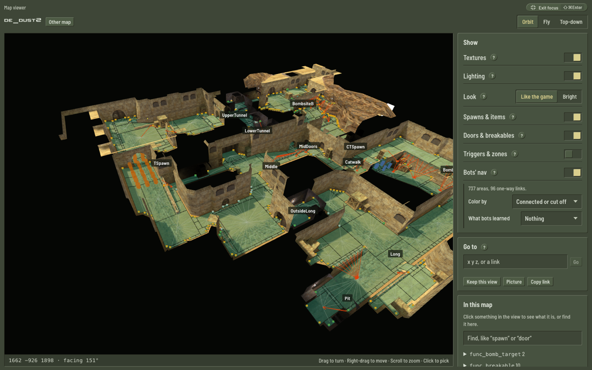
- Camera: Orbit, Fly or Top-down.
- Show: textures, lighting (Like the game or Bright), spawns and items, doors and breakables, triggers and zones, Bots' nav. With the nav on, What bots learned shows cover, sightlines, wallbang spots, corners and angles.
- Click anything to see what it is, or find it in In this map.
- Go to takes coordinates or a link. Keep this view, Picture and Copy link save the spot.
Watch & inspect
Replay
Watch a recorded bot match in 3D: where every bot went, why, and where it fell.
- Pick a recording (the Map simulator makes them), or Open a recording….
- Play at up to 16x. The bar marks rounds, kills and falls.
- Click a player to pick them; double-click to Follow.
- Heat map: time spent, deaths or stuck spots.
- With a bot's trace recorded, read why it did what it did.
Watch & inspect
Demos
Your demos and your servers' HLTV ones, in one list.
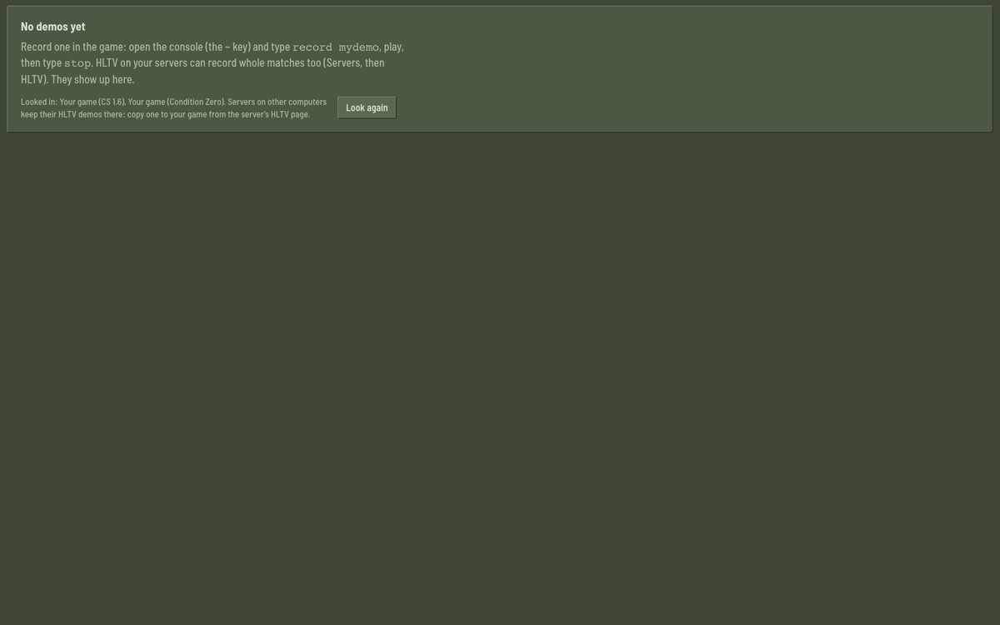
- Sort, filter (All, Recorded in game, HLTV) or search; pick one for who played and where.
- Watch it (a server's demo: Copy to my game and watch; with the game open you get the console command). Show my path in Replay draws where you went.
- Rename, show in folder (Explorer), or Delete. The game only plays demos with plain names.
Record with the app's Record demo button, or turn on HLTV on a server.
Watch & inspect
Textures & models
Browse every texture and model in your game. Browsing changes nothing.
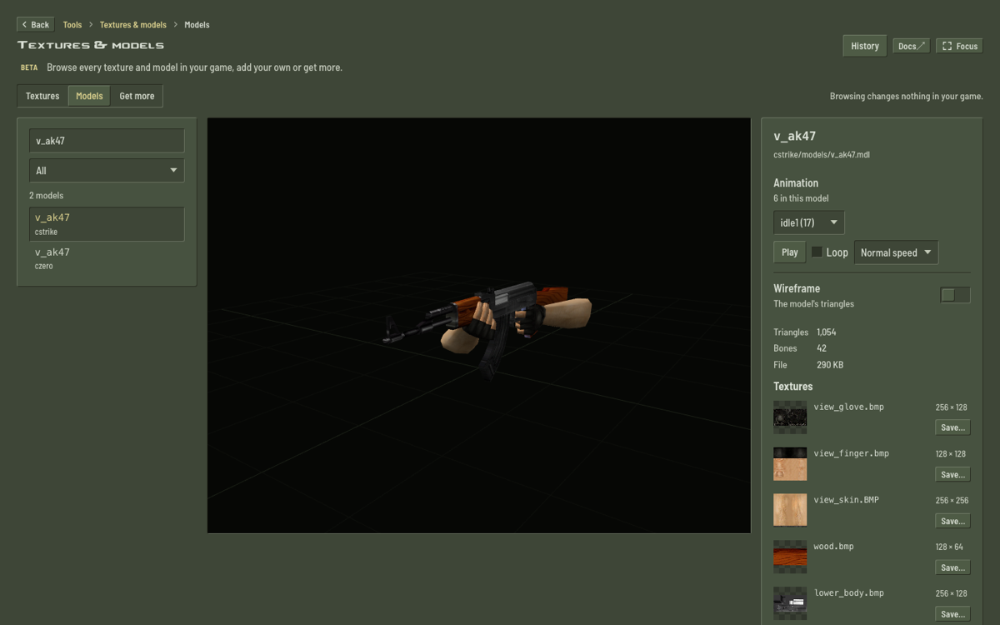
- Textures: search every WAD, see where a texture comes from and which maps use it, Save as picture…. Make your own… turns a picture into a texture. Make sprite… turns one picture, or several as animation frames, into a sprite (.spr): pick the size (a multiple of 8, up to 512), how it faces you, how it's drawn (normal, glow, see-through color or one color) and a clear color, with a live preview; it goes into your game's own sprites.
- Models: players, weapons (in hand, carried, on the ground) and hostages, in 3D with animations and skins.
- Get more: Add a WAD…, Add a model…, or download from GameBanana. A replaced file comes back when you remove yours.
Multiplayer
Playing with friends
Friends only need Counter-Strike, not Loner-Strike. Your server sends them the maps, sounds and models.
Your game is the server: when you quit, everyone drops. For bigger groups, run a dedicated server (which?).
Play with friends sets your server's name and join password, and walks you through one of these:
| Way | When to use it |
|---|---|
| This network | Same Wi-Fi, or a LAN party |
| Direct | Internet, through your router (the app opens the port) |
| playit.gg | Internet, nothing to open on your router |
| Tailscale, ZeroTier | A private network with your friends |
| Radmin VPN, Hamachi | Classic LAN over internet (Radmin: Windows only) |
Trouble? See Friends can't join.
Find a server to join
- Internet: servers other Loner-Strike players listed.
- Favorites and History: saved or played on.
- LAN: games on your network.
Connect or double-click to play; filters narrow the list. To list your server, turn on On the Loner-Strike server list in its Who can join tab.
Multiplayer
LAN party
Everyone on the same Wi-Fi or router finds your server in the LAN tab, with nothing to install.
Your game or a dedicated server
| Host from | Best for |
|---|---|
| Your game | A few people, quickly. Ends when you quit |
| A dedicated server | Bigger parties or a whole evening: it runs on its own, so nobody drops when you leave |
From your game
- In Play with friends, pick This network, a server name and, if you like, a password.
- Start a game from Play.
- Everyone opens Find Servers › LAN in Counter-Strike and joins.
With a dedicated server
- In Servers, New server › This computer.
- Under Who can join, pick This network.
- Start it, and Join from the app.
- Others find it under LAN, or type
connectand the address from Who can join.
Before everyone arrives
- Same game for everyone: Condition Zero or 1.6, matching the server.
- Firewall: allow the game when asked. On Windows, set the Wi-Fi to a Private network.
- Guest Wi-Fi often keeps devices apart. Use the main network, or plug into the router.
Friends who can't be there
With ZeroTier, Radmin VPN or Hamachi, remote friends join the same virtual network and see your server in their LAN tab. Playing with friends walks you through each.
Multiplayer
In-game commands
What players type in chat. The / is optional for most.
For everyone
| Type | What it does |
|---|---|
rtv | Vote to change the map (mode first, then map) |
nominate <map> | Put a map in the next vote |
rtm, nominatemode <mode> | Vote for, or suggest, a mode |
/report <name> <what happened> | Tell the admins about a player (one a minute) |
/rank, /top15, /statsme, /hp | Stats, and who hurt you |
/welcome, /rules | The server's welcome page and rules |
votekick, voteban | Vote against a player, if allowed |
/vips, /donate | Who's VIP, and how to support the server |
For the host and admins
- F3 (
/menu) and F4 (/q): see In the game. - VIPs, if their role allows:
/vip,/noclip,/god,/respawn,/saveand/tp.
5v5 matches
| Type | What it does |
|---|---|
/ready, /notready | The match starts when all are ready; the first ready on each team is captain |
/score, /match | The score and the match's state |
/stay, /switch | The knife round's winners pick a side |
/pause, /unpause | Captains and admins; pauses at the next freeze time |
/start, /restart, /warmup | Admins: start now, start over from 0 - 0, or stop the match |
In some modes
- Deathmatch:
/gunsto pick your weapons again. - Zombie Plague:
zpmenu. - Warcraft 3:
/war3menu,/changerace,/shopmenu. - SuperHero:
/herolist,/myheroes,/drop <hero>.
Servers
Your servers
A dedicated server runs on its own, apart from your game, and you join it like anyone else.
Make one
In Servers, click New server:
- This computer: ready in a few minutes. Keep running after I close Loner-Strike keeps it up when you quit the app.
- A Linux server (VPS): always on, on a rented machine, set up over SSH. See Run a server on a VPS.
A server's name can be in any language, up to 63 characters. Letters outside plain English take more room, so the name field counts down what's left.
Add one you already run brings in an existing server. Bots play on an empty server (Overview) keeps a few bots on so it looks alive in the list.
A server's tabs
| Tab | What's in it |
|---|---|
| Overview | Status, main settings, console |
| Who can join | Visibility, password, address, the server list |
| Health | Updates, security, backups, daily restart, repair, crashes |
| Rotation & extras | Rotation, adverts, kicks, votes |
| Spectators & demos | HLTV |
| Website status | Site, Discord, fast downloads (Linux) |
| Modes, Bots, Rules, Fun, Add-ons | As for your game |
| Bot voice commands | Voice commands |
| Players, Moderation, Stats, Admins, Welcome page | Its people |
| Shared control | Helpers |
| Maps, Mods, Skins & models, Sounds, Get more | Its content; changes go up as you make them |
Tick rate
Game updates per second, bots included, on Overview › Advanced (from the next start): 300 (default) suits most, 500 if there's CPU to spare, 1000 mostly costs CPU, 100 for a slow machine. Players get at most 101 updates a second either way. +sys_ticrate in Extra start options, or sys_ticrate in server.cfg, overrides the pick.
Health and repairs
On the Health tab, under Updates and Repair or remove. Stop the server first.
- Update Valve's server files: the latest server from Valve. Mods and settings stay.
- Repair (in its Mods tab) puts Loner-Strike's basics back. Reinstall Loner-Strike and its mods (this computer) fixes a server that won't start or lost its mods; settings, admins and maps stay.
- Wipe and rebuild (Linux) deletes the server's folder and sets it up again in 5 to 15 minutes. Bans, admins, stats and added maps go. Last resort only.
- Delete the server stops it and deletes its folder. Servers added with Add one you already run have Remove, which leaves the folder alone.
Crashes
A server that crashed shows a badge on its card and page (like 3 crashes in 24 h). Health › Crashes lists each one, newest first: when, the map, what went wrong and the last log lines, with Copy to send it to a mod's maker. Turn on Post crashes to Discord to get new ones in a Discord channel while Loner-Strike runs: a Linux server uses its status channel (Website and Discord); for a server on this computer, paste the channel's webhook link under the switch (in Discord: Edit Channel, Integrations, Webhooks).
A Crash-prone module warning means the server runs a module known to crash servers. The usual one is the official Ham Sandwich, which crashes on map changes: Loner-Strike puts its fixed copy back before every Play and local server start (a Linux server does it before each start), keeping the replaced file beside it.
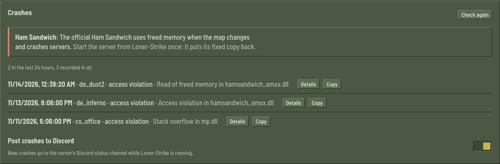
Servers
Run a server on a VPS
An always-on server on a rented Linux machine, set up by the app over SSH in 15 to 30 minutes.
What you need
- Loner-Strike on Windows, or on a Mac with the game in CrossOver.
- Ubuntu or Debian (Ubuntu 22.04 or 24.04 is safest) on an x86 (AMD or Intel) CPU, with a public IPv4 address.
- Not Arm: Oracle Ampere A1, AWS Graviton, Hetzner CAX and Raspberry Pi can't run the server.
1. Choose a host and size
| Players (bots included) | CPU | Memory |
|---|---|---|
| Up to about 10, a few bots | 1 vCPU | 1 GB |
| 20 to 32, with bots | 2 vCPU | 2 to 4 GB |
A fast core beats many (the game uses one). About 2 GB of disk plus maps. Free: Oracle Cloud's Always Free AMD machines (VM.Standard.E2.1.Micro), when available. Paid: small x86 plans at Hetzner, Vultr, DigitalOcean, OVH or Linode, near your players.
2. Make an SSH key
Windows 10 or 11, in PowerShell (press Enter twice at the passphrase prompt):
mkdir $HOME\.ssh -Force
ssh-keygen -t ed25519 -f $HOME\.ssh\loner-strike -C loner-strike
Get-Content $HOME\.ssh\loner-strike.pubMac or Linux, in Terminal:
mkdir -p ~/.ssh
ssh-keygen -t ed25519 -f ~/.ssh/loner-strike -N "" -C loner-strike
cat ~/.ssh/loner-strike.pubCopy the last line (ssh-ed25519 …), the public key. Keys with a passphrase aren't supported yet. Convert a PuTTY key (.ppk) in PuTTYgen first (Conversions, then Export OpenSSH key).
3. Create the machine
- Create a server (instance, droplet) with Ubuntu 24.04 or 22.04 on an x86 plan, with a public IPv4 address.
- Under SSH keys, paste the public key.
- Note its public IP and SSH user:
ubuntuon Oracle and AWS,rooton Hetzner, DigitalOcean and Vultr.
Oracle Cloud
Shape: AMD, VM.Standard.E2.1.Micro (not Ampere). Turn on Assign a public IPv4 address; if it has none, add an ephemeral public IP on the VNIC (Attached VNICs, IPv4 addresses, edit). Firewall: the subnet's security list (Virtual cloud networks, your network, Security). "Out of capacity": try another availability domain, shape, or later.
Hetzner Cloud
Shared vCPU x86 (CX or CPX), not Arm (CAX). Keep Public IPv4 on. If you attach a firewall (Firewalls), allow inbound UDP 27015 to 27020.
DigitalOcean
Any Basic droplet with Ubuntu. If you use a firewall (Networking, Firewalls), add inbound UDP 27015 to 27020.
Vultr
Cloud Compute, Intel or AMD. In a firewall group (Network, Firewall), add inbound UDP 27015 to 27020.
AWS Lightsail
Linux/Unix, OS only, Ubuntu. Upload your key under Change SSH key pair. Firewall: Networking tab, IPv4 firewall, Add rule (Custom, UDP, 27015 to 27020). Attach a static IP so the address survives restarts.
4. Open UDP 27015 to 27020
The app opens the machine's own firewall, but not your provider's (security list, security group, firewall group). Add an inbound rule there: UDP, ports 27015 to 27020, source anywhere (0.0.0.0/0). Keep SSH (TCP 22) open; the app uses it.
5. Add it in Loner-Strike
- In Servers, New server › A Linux server (VPS).
- Address: the public IP. User:
ubuntuorroot. - SSH key: the private key (the file without
.pub), inC:\Users\<you>\.sshon Windows. On a Mac, press Cmd+Shift+G in the picker and type~/.ssh. - Check the machine. It shows the fingerprint (
SHA256:...) and whether it matches yourknown_hosts. For a new machine, compare withssh-keygen -lf /etc/ssh/ssh_host_ed25519_key.pubin your provider's web console. - Pick a name, the game, and Set it up like: My game (your modes, settings, admins and maps) or Start fresh.
- Who can join: Listed on Steam, or Anyone with the address (unlisted). A join password keeps strangers out either way.
- Make the server.
Setup takes 5 to 15 minutes. The server runs on UDP 27015, app closed or not, and restarts after a crash or reboot. If setup stops, Try again carries on.
6. Join and manage it
- Join, Start, Stop and Open are in Servers. Joining an unlisted server restarts the game to connect.
- Friends use
connect <address>:27015in the console, or Find servers if it's listed. - The Overview tab's console takes commands like
status.
Over SSH (ssh -i ~/.ssh/loner-strike ubuntu@<address>), lsctl manages it:
lsctl list the servers on the machine
lsctl status running or not
lsctl restart also start, stop
lsctl logs the last 100 console lines7. Website status, and keeping ports closed
Optional: Website status (also used for shared control) needs a web address, served one of two ways:
- Cloudflare Tunnel (recommended if your domain is on Cloudflare): no web ports are opened. In Cloudflare's dashboard (Zero Trust, then Networks, then Tunnels), make a tunnel, copy its token and paste it in Website status. The app installs and runs it.
- Its own HTTPS (Caddy): no Cloudflare needed, but opens TCP 80 and 443 on the machine and in your provider's firewall.
The game still needs UDP 27015 to 27020 open. With a tunnel, close everything else except SSH (TCP 22). See Security and health.
Removing it
Delete the server on its Health tab stops the service and removes its folder. Then delete the machine at your provider so it stops costing money.
Problems: Can't connect to a Linux machine, Friends can't join.
Servers
Running a server
Each server has these as tabs; your own game has them in the sidebar.
Admins and VIPs
In Admins, add people by SteamID as admins or VIPs, for good or for some days. What each role gets sets their powers; VIP perks (free armor, a defuse kit, extra money, a tag) and an optional donate link are under VIP & donations. Admin and ban lists can be shared across your servers.
Moderation and stats
Moderation: player reports (they notify you), chat log, mutes, word filter, bans and player history. Stats: ranks and 5v5 results.
Welcome page
What players see on joining: pick a style or write your own HTML. /welcome shows it again.
Rotation and extras
Map rotation, adverts, AFK and high-ping kicks, join and leave messages, vote kick and vote ban, and what happens when it empties. The daily restart is on the Health tab; players are warned 5 minutes and 1 minute before.
Fast downloads
A player who doesn't have one of your server's custom maps, models or sounds downloads it when they join. From the game server itself that's slow (often minutes for one map). With fast downloads (FastDL) the game fetches the same files from a web address instead, in seconds. Turn it on under Rotation & extras, Fast downloads:
- A server on a Linux machine: turn on Fast downloads in its Website status. The machine serves the files itself and fills in the address. Nothing to upload.
- Any other server: Copy files for your web server puts the custom files (never the game's own) in a folder laid out like the game's. Upload that folder to any web host that serves plain files, and paste its address.
The app sets sv_downloadurl and turns on sv_allowdownload for you. The address is used from the next map. Players without fast downloads still get the files from the game server.
Spectators and demos
HLTV lets people watch with a delay and records demos. Copy a demo to your game from the list, then viewdemo <name> in the console.
Website status
On Linux: a live player count for your website, a Discord message of who's playing, down alerts and fast downloads, each checked from outside. Setup: step 7.
Skins and models
The server's skins and models and who sees each (everyone, one team, admins), plus each map's use of the 512 models and 512 sounds limit.
Servers
Updates, security and backups
Updates
After an app update, each server updates its plugins and bot brain once nobody's playing (bots don't count). Update now (Servers or the Health tab) does it at once; turn off Update by itself when nobody's playing to update only by hand.
On Linux, security updates install themselves; for the rest, sudo apt update && sudo apt upgrade. Valve's files: Health and repairs. Mod, map and sound changes load on the next map.
Security and health
Each Linux server's Health tab checks logins, RCON, updates, fail2ban, pending restarts, the sandbox, disk, memory and CPU, and fixes what it can. The app already sandboxes the game, keeps RCON local and installs fail2ban. Only you can:
- Set your provider's firewall to allow only UDP 27015 to 27020 and TCP 22, with SSH limited to your address if it doesn't change.
- Guard your SSH key (the file without
.pub). If it leaked, remove its line from~/.ssh/authorized_keyson the machine and make a new one. - Keep password logins off; the panel can do it. Loner-Strike always uses your key.
- Prefer a Cloudflare Tunnel for Website status: it opens no web ports.
- Decide about RCON if another game server shares the machine: closing it to the internet affects every server there, so it stays open until you choose in the panel.
Backups
- Linux servers are backed up daily while Loner-Strike is open (bans, admins, settings; last 7 kept on your computer). Turn it off in Settings › Backup & restore.
- Back up to a file in Settings saves everything (Back up everything) or Just your game. Passwords are only included if you lock the backup with your own password.
- Restore a backup in Settings restores all or part (close the game first). The same button in Servers restores one server; each Health tab has Back up this server.
Share
Community
Maps, modes, prefabs, sprays and textures made with Loner-Strike, under Tools › Community. Find one, try it in a click, play it with bots.

How it works
Files, pictures, likes and comments live on GameBanana; a page with a Custom Tag whose value is LonerStrike shows up in Community (on GameBanana's Technical tab, under Tags, add a Custom Tag with the value LonerStrike, the title can stay empty, then press + and save). Loner-Strike adds badges, featured picks and moderation, and checks every packaged file is what it claims to be. A creation belongs to the GameBanana member who first uploaded it: others can't post an "update" to it, only a remix that credits it.
Try something
- On Browse, search by name, maker or mode, and filter by Maps, Modes, Prefabs, Sprays or Textures (and, for modes, Bots).
- Press Try it, then Install it.
- Play with bots. A prefab opens in the map editor instead.
Installed things appear in their usual places, marked From Community. Installed has Update, Remove and Remix in Game Mode Studio. Servers carry it from Library › Community content.
On lonerstrike.com, Open in Loner-Strike opens a creation's page in the app. It only opens the page: installing still takes Try it and Install it.
Updates
A count on Tools and Community shows waiting updates; Installed lists them first, with the creator's notes. Press Update or Update all.
- Never while in use: the map or mode you're playing updates at the next map change.
- Servers too, once nobody's playing it there (bots don't count).
- Go back to the previous version restores the old one; a failed update does it by itself.
- Your work stays yours: placed prefabs and remixed modes don't change.
Badges
- Works with bots: comes with a bot nav and map knowledge.
- Checked with bots: passed a map simulation.
- Settings only: a Game Mode Studio mode, built on your computer.
- On modes, as the maker rated it: Bots play this well, Bots are so-so, Best with a friend or Solo, no bots.
- Featured: picked by the Loner-Strike team.
- On modes that do more than their own game: Runs server commands, Runs AMX Mod X commands, Calls other plugins or Can kick players. You're asked before one installs, and asked again if the mode does more than its listing said.
What it will install
Content and Game Mode Studio modes (built by your app); never anything that runs code. Items marked Plugins, Not checked or Pulled won't install.
Report something
Report on any creation sends only the page, a reason and your note. Moderators can pull it from every app within about half an hour; installed copies stay, marked as pulled.
Share
Publishing
Package it in the app and upload it to GameBanana, with the credits filled in for you, and it shows up in Community. The app never uploads or signs in to GameBanana for you.
What can be shared
You can share
- Maps you made or added, with their nav, knowledge and overview, and their own sounds, models, sprites and textures
- A map's editable source, so others can remix it
- Game Mode Studio modes: only the graph; each player's app builds it
- The custom creatures and NPC models a map or mode uses, carried along in your own folder
- Creature types on their own
- Prefabs, textures and sprays
Not shared
- The game's own files: stock maps, models, sounds and textures
- Plugins and compiled code:
.amxx.sma.dll.exeand scripts. A plugin from Plugin Studio: post its.smaon GameBanana yourself - Game settings files:
.cfgliblist.gamand plugin lists - Archives inside the package
- Metamod and
dllsfolders
Share your own work or work you may share, and credit what you used. Sprays are checked by a moderator first.
Publish a map
- Compile the map into your game (the editor's Publish… brings you here once it has).
- In Tools › Community › Publish, choose A map and pick it. The app says what's missing.
- Fill in Name, Made by (your GameBanana name), About it, the modes it's for, and up to 6 screenshots.
- Check Credits for the files it uses (below).
- Make the package: a
.zipwith the map, nav and knowledge, a fresh download list, the overview, the files it uses and aREADME.txtwith the credits. - Open GameBanana and sign in there. Upload the package unchanged in the Counter-Strike 1.6 section, with the screenshots. On GameBanana's Technical tab, under Tags, add a Custom Tag with the value LonerStrike (the title can stay empty), then press + and save: that's how Community finds it. Paste the credits into GameBanana's Authors section. The app has copy buttons for the name, description, the tag's value and the credits.
- Once GameBanana has checked the file, paste the page's link in the app and press Add to Community.
Most things are Listed within a few minutes; some go to a moderator first. If it's turned down, the app says why.
Publish a game mode
The same steps, with A game mode:
- Checks first: the graph has to compile, and every file the mode uses (in node settings, file variables and table cells) has to be on your computer or linked to the GameBanana item that has it (My mode › Details › Requirements in the Studio).
- Set How well bots play it (the Studio may suggest it); it shows as a badge and in the Bots filter.
- Screenshots: a cover card drawn from the name and line comes first (untick it to leave it out), then up to 5 of yours.
- If the mode runs server commands, kicks players or calls other plugins, the listing says so with a badge.
Others can play and remix it, with your name on it.
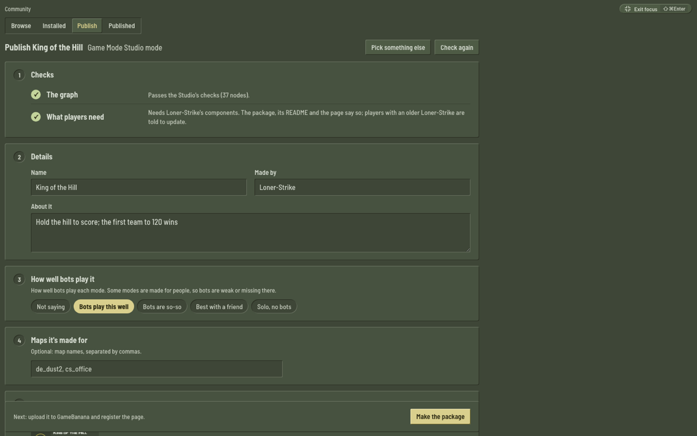
Credits
Loner-Strike tracks where every file came from:
- Before you download. Get more and the Content Browser show a page's terms (sharing, commercial use, who to credit, license) and keep them with the files.
- When you package it. Credits for the files it uses lists each file's source, makers and what its page allows.
- Ask first. Most GameBanana pages want you to ask the maker. Once they say yes, press Permission granted… and note who, where and when.
- Not allowed. The package isn't made until you record permission.
- Unknown files. Add credit… names the maker and, if you know, its GameBanana page.
The credits go into README.txt, the Community listing, and a block for GameBanana's Authors module: one line per person, like jam — Map. It names you, the maker of the original when it's a remix, the makers of shared creatures it carries, and the makers of the files above. Nobody else.
Share and remix maps
When you publish a map, tick Include the editable source (others can remix it) and pick the map's project (the one named like the map is picked for you). The package then also has a source/ folder:
- the map editor's project (
.lsmap); - a Valve 220
.mapthat TrenchBroom, Hammer and J.A.C.K. open; - a texture file with only the map's own textures (the game's own textures are never in it: every player has them);
- a short note.
Players who try it get the map as usual; source/ never goes into their game. On a map shared with its source, Remix this map on its Community page saves a copy as a new project of yours (<map>_remix, never over one you have) and opens it in the map editor. When you publish your remix, the package, its README and the GameBanana text say "A remix of" the original, by its maker.
A map's custom creatures (an ls_creature or wave spawner using your own type) go with it, named for your account; players get them in their own block in creatures.ini, removed again with the map. How creatures work.
After it's up
The Published tab lists what you've shared. To update one, upload the new file to its GameBanana page, then paste the link in Publish again. Players get it as an update.
Unlist takes one off Community (installed copies stay). If the app asks, put the short code it gives you on the GameBanana page, so it knows the page is yours; List again puts it back.
Share
Community and your privacy
Loner-Strike's community server keeps nothing about you.
Browsing and installing
The list comes from dl.lonerstrike.com and the files from GameBanana. No account needed, and the list doesn't know who fetched it.
Publishing
Add to Community sends only the GameBanana page's address and the app's version. The listing is built from the public page and the package.
Reports
A report keeps the page, reason and note for 90 days, plus a scrambled tag of your address (its key lives only in memory) to spot floods. Your address is never stored or shown to moderators.
Rate limits and logs
Requests are counted per address in memory only, then forgotten. Logs say what happened to which page, never who asked.
On your computer
What you published and installed, and a copy of the Community list, stay in Loner-Strike's folder. See also the privacy page.
Share
Discord, Supporters and moderators
Tie your Steam account to the Loner-Strike Discord, get the Support Pack, or help moderate a server.
Link your Steam account to Discord
- On any Loner-Strike server, say
/linkin the game chat. You get a code likeABCD-EFGH, good for 10 minutes. - In the Loner-Strike Discord server, type
/linkwith your code (/link code:ABCD-EFGH) in any channel, not in a DM to the bot. Only you see the reply.
/link alone in Discord says what you're linked to; /unlink undoes it. One Discord account goes with one Steam account. A server that isn't claimed, or whose owner's Loner-Strike is closed, can't make codes: use an official server.
The Support Pack
The Loner-Strike Support Pack (from $3, through Polar) gives you the Supporter role in the Discord and a [VIP] tag, a reserved slot and a join message on the official servers. Loner-Strike itself stays free for everyone. After paying, connect your Discord on the receipt page to get the role; for the in-game perks, link your Steam account. Server owners can honor Supporters too, under Admins › VIP & donations.
Moderate a server
- Link your Steam account (above). To moderate an official server, link on an official server.
- In the Discord, apply with Apply › Server moderator and pick the server.
- When the owner approves, the bot sends you an invite. In Loner-Strike, press Join as moderator on Servers and paste it: you see what you'll be able to do before you accept.
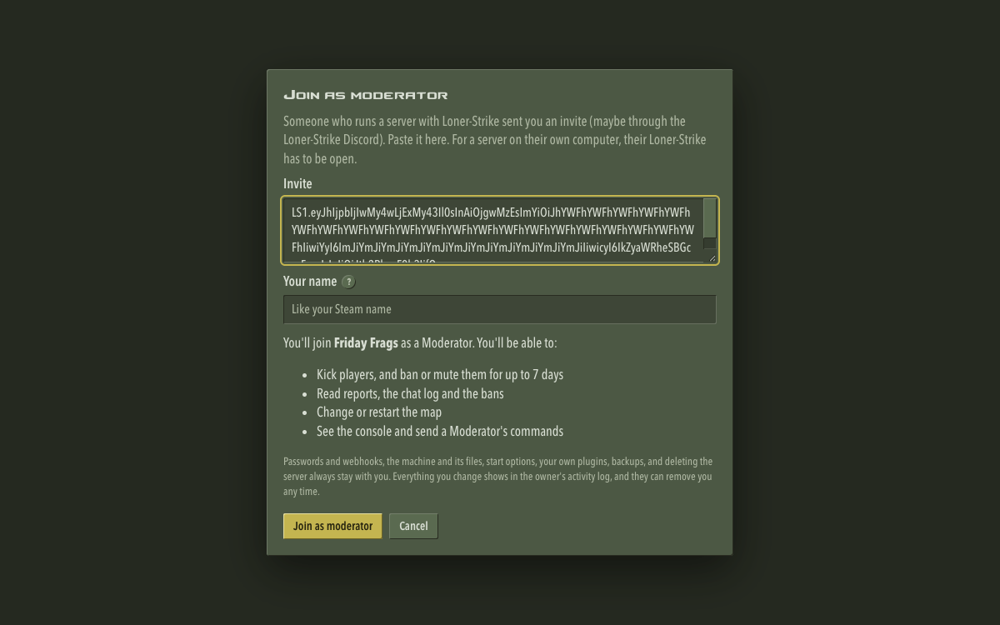
Owners: claim the server under its Shared control tab (Loner-Strike roles), then approve applicants and press Create moderator invite. Shared-control Admins can invite Moderators too. Revoke takes access away in the app, the game and Discord.
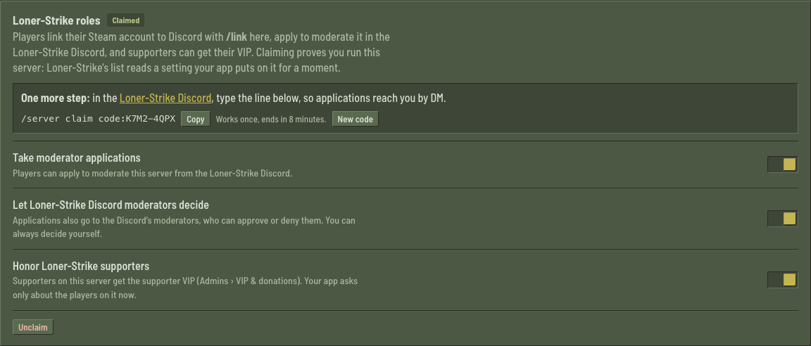
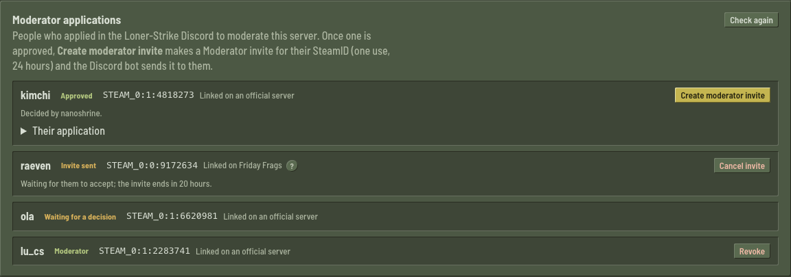
AI agents
Connect an AI agent
Let coding agents like Claude Code, Codex, OpenCode or Cursor use Loner-Strike's tools through MCP (the Model Context Protocol).
Turn it on
- Open Settings › AI agents.
- Turn on Let AI agents connect. Agents can then only look.
- Turn on Allow changes to let them edit maps and navs and start or stop servers.
- Under Connect an agent, pick yours, press Copy and paste where it says. The copy has the app's real path.
Each agent
Replace <app> with the app's path, usually C:\Users\<you>\AppData\Local\Loner-Strike\loner-strike.exe (on a Mac: /Applications/Loner-Strike.app/Contents/MacOS/loner-strike); Copy fills it in.
Claude Code
In a terminal:
claude mcp add --scope user --transport stdio loner-strike -- "<app>" --mcp-stdioclaude mcp list should say it's connected, and /mcp inside Claude Code lists the tools.
Codex
In ~/.codex/config.toml:
[mcp_servers.loner-strike]
command = "<app>"
args = ["--mcp-stdio"]OpenCode
In opencode.json:
"mcp": {"servers": {"loner-strike": {"type": "local", "command": ["<app>", "--mcp-stdio"]}}}Cursor
In ~/.cursor/mcp.json:
"mcpServers": {"loner-strike": {"type": "stdio", "command": "<app>", "args": ["--mcp-stdio"]}}Claude Desktop
In claude_desktop_config.json (Settings › Developer › Edit Config):
"mcpServers": {"loner-strike": {"command": "<app>", "args": ["--mcp-stdio"]}}VS Code
In .vscode/mcp.json, or MCP: Open User Configuration:
"servers": {"loner-strike": {"type": "stdio", "command": "<app>", "args": ["--mcp-stdio"]}}Others
Other MCP agents (Windsurf and the rest) use the same shape: command is the app's path, with --mcp-stdio as its argument. HTTP-only agents can use Connect over HTTP with the token instead: http://127.0.0.1:8029/mcp with Authorization: Bearer <token>. The token is on the same page and changes every launch unless you tick Keep the same token across restarts.
What agents can do
- Read and check maps, build, compile and playtest in the map editor, fix navs, name places, make overviews.
- See what you've picked in the map editor, so "make this taller" works, and pick things for you to look at.
- Work in Game Mode Studio and Plugin Studio, read replays and demos.
- Run your servers and read their consoles, logs, crashes and bots' thinking.
More than 170 tools in all; /mcp in Claude Code (or your agent's tool list) shows them.
Try: "make a small aim arena, check it for bots and playtest it".
What keeps you in charge
- Off until you turn it on, and only reachable from your own computer. Web pages can't use it.
- Look-only until Allow changes is on.
- The app asks you (An AI agent is asking) before deleting, kicking or banning, stopping a server people are on, starting the game, compiling into the game, or anything public or online.
- Off limits: these settings, updates and removing the app, phone access, shared control and secrets. Passwords, tokens, keys, webhooks and Steam IDs are never shown.
- What agents did lists every call: done, not allowed, or didn't work.
Reference
Reference
Made from the app's own catalogs, so it always matches the app. The docs search finds every entry.
- Game Mode Studio nodes: all 659, by category (47), each with its pins, settings and limits.
- Pin types: what each type is, what it plugs into, and the casts.
- Map editor entities: all 158, with their keys and flags.
- Map editor: every tool and command, where to find it and its keys.
Open the reference: it has its own search with filters.
Reference · Guide
Types and casting
Numbers, text, players, entities, vectors and lists, and turning one into another.
Read the guide. In it:
Reference · Guide
Events and flow
What starts a graph running, and Branch, Sequence, loops and timers.
Read the guide. In it:
Reference · Guide
Variables and saving
Mode, round and player variables, and what's kept between maps.
Read the guide. In it:
Reference · Guide
Spawning and transforms
Making props, creatures and effects, and moving, turning and attaching them.
Read the guide. In it:
Reference · Guide
Limits
The comfort limits on effects and searches, and when the game itself runs out.
Read the guide. In it:
Reference · Guide
Steering bots
Goals, offers, friends and avoid areas: telling bots what matters in your mode.
Read the guide. In it:
Reference · Guide
Sharing
What travels with a mode, what players need, and how credits work.
Read the guide. In it:
Help
Something's wrong?
Find what you see, then follow the link to the fix.
Setup and the app
- Setup failed or is stuck: Setup or a download failed.
- The game isn't found: "No game found".
- On a Mac, through CrossOver: Mac setup, then the game doesn't start.
- An update failed: The app won't update.
Bots
- No bots, or they don't move: No bots; in a playtest, bots stand still.
- Bots don't know a map: Bots on new maps.
Servers and friends
- The server doesn't show in lists: set Who can join to Listed (a server's tabs) and open its ports.
- Friends can't join: Friends can't join.
- A server crashes or freezes: Crashes, or a server won't start.
- A mode won't load on a map: too many models for the mode.
- Voice commands don't work: When it doesn't work.
Making maps
- The map leaks or won't compile: "The map leaks" and when the compiler finds a problem.
- Compiling doesn't start on a Mac: Compiling doesn't start on a Mac.
Sharing
- My upload doesn't show in Community: check the publishing steps. The page needs the Counter-Strike 1.6 section, a Custom Tag with the value LonerStrike (on GameBanana's Technical tab, under Tags; the title can stay empty; press +, then save), and GameBanana's file check done (then press Add to Community again). A moderator may be checking it first, and a daily re-check drops pages that lose the tag or are taken down.
Still stuck? Send diagnostics.
Help
No bots or Bad Rcon
The app checks for these itself and fixes what it can; its message says what's left.
No bots, or the app can't connect to the game #
Loner-Strike isn't loading in the game.
- Quit the game completely and start it again from Play.
- Still nothing? Mods › Repair, then restart the game. Settings and mods stay.
- If your antivirus removed files, allow the game's folder first (more).
- Still stuck? Copy your diagnostics.
"Bad Rcon" lines in the game console #
The app is using a console password the game doesn't know (Loner-Strike sets it each map).
rcon_passwordin the console shows"": Loner-Strike isn't loading. See No bots.- It shows another password: a config sets its own. Remove the
rcon_passwordline fromserver.cfg,autoexec.cfgorlistenserver.cfgincstrikeorczero, then restart the map.
It stopped working after a Steam update #
Steam updates, and "Verify integrity of game files", restore the original liblist.gam, which unhooks the mods. The app fixes it by itself; restart the game afterwards.
To check by hand, the gamedll line in Half-Life\cstrike\liblist.gam (or czero\) should read
gamedll "addons\metamod\dlls\metamod.dll"and meta list in the console should list AMX Mod X ("Unknown command" means the mods aren't loading).
Files keep disappearing #
Windows Defender and some other antivirus programs remove metamod.dll or amxmodx_mm.dll by mistake. Allow the game's folder, then Repair in Mods.
"A different copy of the game is running" #
You started a copy Loner-Strike isn't set up in. Close it and start from Play, or switch copies in Settings › Game.
Help
Setup and updates
"No game found" #
- Install Counter-Strike 1.6 or Condition Zero from Steam, then click Look again.
- Somewhere else? Choose the game folder and pick the
Half-Lifefolder (the one withcstrikeorczero). - Mac (CrossOver): it must be the Windows version, in a CrossOver bottle (Mac setup).
"This copy of the game is older than Loner-Strike supports" #
A copy from before Valve's 2013 update (old retail or repacked) can't load the mods. Use the Steam version.
"Counter-Strike is open" during setup or restore #
Quit the game and try again. If it says Counter-Strike didn't close, quit it yourself (Task Manager on Windows).
Setup or a download failed #
- Couldn't download: check your internet connection and try again.
- Couldn't unpack a download: try again; if it keeps happening, clear downloads in Settings › Storage.
- A mod didn't build: Try again next to it in Mods. Mac (CrossOver): CrossOver must be in Applications.
- Mod files missing from the app: reinstall Loner-Strike.
The game doesn't start, or keeps saying "Starting" #
If the first start is slow (more often on a Mac with CrossOver), after a while Play offers to start again. If the game sits at its menu on another screen, close it and start from Play. Changing resolution while hosting drops you to the main menu: start again.
Windows says it protected my PC #
SmartScreen warns about apps that aren't widely downloaded yet. Click More info, then Run anyway. The code is open on GitHub.
The app won't update #
- Couldn't check for updates: check your internet connection.
- Something is being set up or restored: wait, then update.
- Otherwise, install the newest version from lonerstrike.com over the old one. Settings stay.
Help
Connecting
Friends can't join #
- They need the same game: a Condition Zero server needs Condition Zero.
- Check the address and join password.
- Over the internet without a tunnel, forward UDP 27015 on your router and allow it in your firewall (or use playit.gg or Tailscale).
- Allow the game when Windows Defender Firewall asks (on a Mac, when macOS asks), on private networks at least. Each server has its own
hlds.exe, so a new server asks again. - Clicked Cancel by mistake? Open Windows Security › Firewall & network protection › Allow an app through firewall › Change settings, find
hlds.exe(add it with Allow another app… from the server's folder if it isn't there) and tick both Private and Public. - "Failed to contact game server" on Linux: allow UDP 27015 to 27020 in the provider's firewall.
A server won't start #
- "… is using port … already": stop the server it names, or change this one's port on Overview.
- "Port … is in use by another program": something else on this computer has it (another game server, a server Loner-Strike isn't managing). Close it, or change this server's port on Overview.
- "keeps crashing, so it was left off": check the console on Overview. A newly added mod is the usual cause: remove it.
- On this computer, Reinstall Loner-Strike and its mods (Health tab) fixes lost files.
- Mac (CrossOver): CrossOver must be in Applications and the servers folder inside the game's bottle.
- Windows user name in another language than Windows? The old server can trip over it. Move servers to a plain folder like
C:\LonerStrikein Settings › Servers folder.
Can't connect to a Linux machine #
- Couldn't reach it: check it's running and SSH (TCP 22) is open in your provider's firewall.
- Key rejected: check the user (often
rootorubuntu), that the key was added to the machine, and that you picked the private key, not the.pub. Passphrase keys aren't supported yet. - The machine's identity changed: expected after a rebuild. Run
ssh-keygen -R <address>and add the server again. If you didn't rebuild it, don't connect: check the fingerprint in your provider's web console. - Only runs on x86: use an AMD or Intel machine, not ARM.
- Can't use sudo: connect as
root, or give the user passwordless sudo. - Can't reach port 22 on Oracle: the machine has no public IP (add one).
- Setup stopped part way: Try again carries on. Wipe and rebuild starts over.
My phone can't connect #
- The phone must be on the same Wi-Fi, with Loner-Strike open on the computer.
- On Windows, set the Wi-Fi to a Private network.
- "This phone isn't signed in any more": scan the QR code in Settings again.
- "Port 8028 is busy": close whatever uses it (often an older phone panel) and try again.
Help
Tools, the editor and the studios
The 3D view is black or empty #
Update your graphics driver; on Windows, don't force Loner-Strike onto a basic display adapter. Big maps take a few seconds the first time.
Compiling doesn't start on a Mac #
The compiler runs through CrossOver in your game's bottle, so set the game up in Loner-Strike first. "Compiling maps works on Windows, and on a Mac with CrossOver" means CrossOver isn't in Applications. The first compile is slower.
"The map leaks" #
Press Show the leak line and follow the red line to where it leaves the map; close that gap with a brush. Only world brushes seal a map, not entities like a func_wall or door.
Textures are missing #
A WAD the map lists isn't on this computer, or none has the texture. Put the WADs beside the map, or add them in Map properties › WADs. For Hammer, J.A.C.K. or TrenchBroom maps, see Texture files.
A playtest doesn't start, or bots stand still #
- Close the game if it asks, and let it restart into the playtest.
- Bots standing still haven't learned the map: leave Teach bots the map first ticked, or use Teach bots this map in the Map doctor.
- Bots stuck in one place: run the Map simulator and fix the spot in the Nav fixer.
Game Mode Studio won't playtest #
Playtest waits until Problems is empty: click each to go to its node. If nothing happens, check the events are wired (a node only runs when a wire leads to it).
A plugin won't compile #
Errors under Problems are explained and marked on their lines. "Couldn't find your game's install to run the compiler" means Loner-Strike isn't set up in the game yet: run setup first.
Something else is off #
Tell us on Discord or in a GitHub issue, with diagnostics and the map or mode if you can share it.
Help
Questions
Is it really free? #
Yes. It's open source (GPL-3), with every release on GitHub.
Will it mess up my game? #
No. Changed files are backed up and put back on removal. As a last resort, Steam can restore the game: right-click it in your library, then Properties, Installed Files, Verify integrity of game files. Then Repair in Mods sets Loner-Strike up again.
What about VAC and other people's servers? #
The mods are standard server mods (Metamod and AMX Mod X) and only load in games you host. On other servers nothing of Loner-Strike's runs.
1.6 or Condition Zero? #
Both work, and you can set up both; switch in Settings › Game. Friends need the same one to join you.
How do updates work? #
The app checks at start and shows what's new before you install. Servers update afterwards, once nobody's playing. See the changelog.
How do I remove it? #
- From one game: Settings › Setup › Remove from Counter-Strike 1.6 or Remove from Condition Zero. Your files are put back; settings, admins and stats are kept.
- Everything: Remove everything there removes it from every game and deletes your servers on this computer and all its data. Servers on Linux machines keep running.
- Then uninstall the app like any other.
Do the tools work on a Mac? #
Yes, all of them. The map compiler runs through CrossOver, in your game's bottle.
What does Beta mean on the tools? #
They're new and still settling in (more).
Where are its files? #
Settings › Storage (where you can also clear downloads) and Servers folder.
Still stuck? Send diagnostics #
In Settings › Help, click Copy next to Copy diagnostics: a short report (version, game folders, what's installed, recent errors) with no passwords. Paste it in a GitHub issue; Report a problem opens one.